前一篇博文发出后，某些读者抱怨说——为啥没聊“推倒柏林墙30周年”的事情。
俺简单说明一下：对于某些重大事件的纪念日，俺如果总是在当天（或前后一天）发【相关的】博文，“线上活动”会呈现出明显的【可预测性】。这对于“安全防范＆隐匿性”【不利】。
考虑到【30周年】属于重大纪念，今天俺特意发了【原创】博文，而且是【长篇】哦。图片很多，大伙儿慢慢看。
聊“东西德与柏林墙”，当然要从“纳粹战败”开始说起。
话说1945年4月，苏军攻入柏林，“柏林战役”开打。4月30日，苏军距离纳粹总理府仅剩2个街区，臭名昭著的纳粹头子希特勒自杀。希特勒在政治遗嘱中指明：由海军元帅卡尔·邓尼茨接替其“总统职务”，由臭名昭著的“忽悠部部长”戈培尔接替其“总理职务”。
顺便普及个小知识：
希特勒本人身兼“总统 ＆ 总理”。为此，专门给他量身定做一个特殊职务，德语称作“Führer und Reichskanzler”，中文翻译为“元首”。但这个翻译很容易产生误会——因为其它一些外来词汇也被翻译为“元首”。在前几年某篇谈翻译的博文（链接在“这里”），俺专门吐槽过这个翻译。
由于戈培尔身在柏林，希特勒死后次日（5月1日），他也自杀（而且是全家自杀）。至此，邓尼茨成为“第三帝国”的主要负责人，但他在这个位置上只待了一星期，德国就无条件投降了。本来邓尼茨提出：要与英美单独讲和（单方面停战），但被艾森豪威尔拒绝了。邓尼茨只好在5月7日签署《德国无条件投降书》。
邓尼茨的【功劳】在于——他在短短的几天时间里，执行了一个【大规模撤离计划】（代号“汉尼拔行动”）——从德国东部（包括“东普鲁士”和某些德占领区）撤出了大约200万人口，其中有30万德军。即使在5月8日（正式签署《德国无条件投降书》的次日），由94艘船组成的庞大船队还从拉脱维亚某港口运走一万八千人到西方。
从某种意义上讲——邓尼茨帮助那200万人摆脱了共产运动的魔爪。
下面这张地图标识了纳粹德国“无条件投降”时，美苏双方军队的实际控制线。后来划分各国占领区的时候，原则上按照战前德国各州的边界划分，美国兵从图中的紫色区域撤出。至于图中的黑色粗线条——就是日后的【两德边界】。
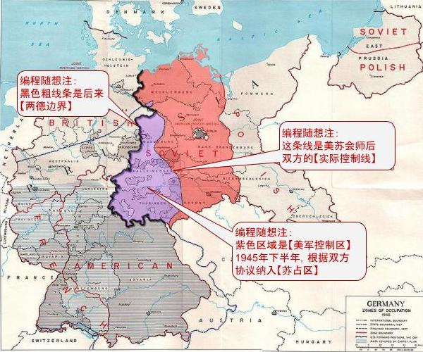
（纳粹德国投降时，东西方阵营军队的【实际控制线】）
其实刚开始是“美、英、苏”三国占领德国，没法国啥事儿。后来法国佬非要来分一杯羹，美国佬与英国佬碍于面子，各自划了一小块——就成为后来的“法国占领区”。
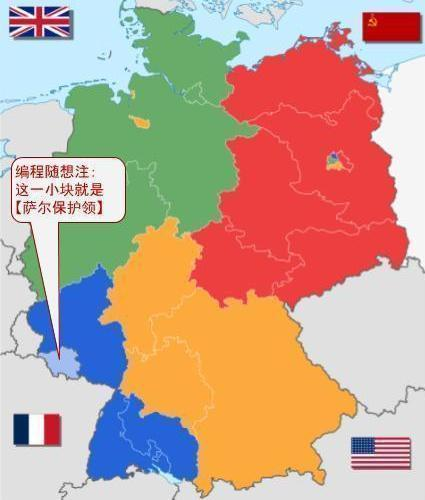
（4国瓜分德国）
在上述这张“德国占领区地图”，俺特意标注“萨尔保护领”。
前面提到：“法国佬非要来分一杯羹”。法国佬当然不是来义务劳动滴，戴高乐有自己的小算盘，而其中之一就是这个“萨尔保护领”。法国佬坚持说：此地不属于德国！于是搞出来这么个玩意儿。那地方面积很小，但矿产丰富，而且正好处于“法德边境”。真可谓“戴高乐之心，路人皆知”。
可惜戴高乐的如意算盘终究落空——当地后来（1955）搞了【全民公投】，与德国（西德）合并。
“美/苏/英/法”瓜分德国之后，由于柏林是纳粹德国首都，地位特殊。因此柏林也一分为四（参见如下地图）
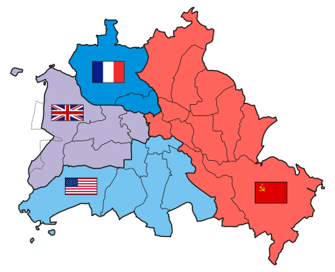
（4国瓜分【柏林】）
下面这张照片是——“美、苏、英、法”的军方4巨头在柏林合影。照片中从左到右依次为：蒙哥马利（英）、艾森豪威尔（美）、朱可夫（苏）、塔西尼（法）。
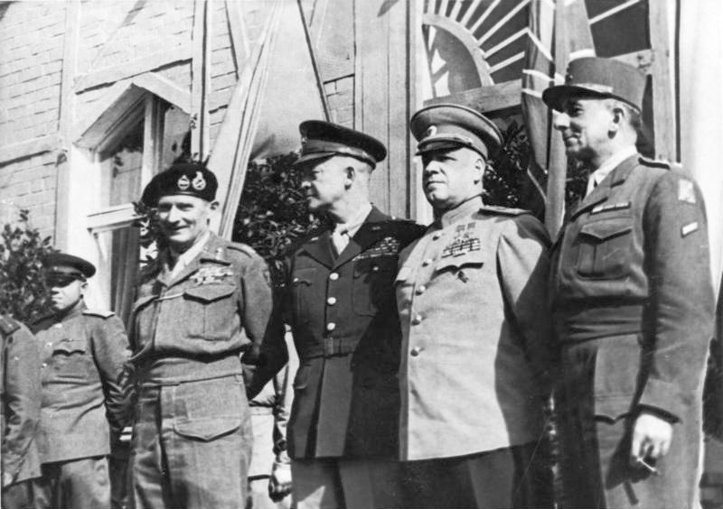
（“盟军四巨头”在柏林合影留念。摄于1945年6月5日）
伊格尔·古琴科（Igor Gouzenko）是“格鲁乌”（GRU，全称“苏联红军总参谋部军事情报局”）的译电员，在苏联驻加拿大使馆工作。1945年9月5日，他带着【密码本＆109份绝密文件】叛逃到西方。
他的叛逃直接导致——苏联安插在欧美各国的谍报网遭到毁灭性打击。正是因为古琴科的功劳，美国高层才意识到——制造原子弹的“曼哈顿计划”早就被苏联渗透了。
（伊格尔·古琴科）
小插曲——物理学家费曼的【间谍朋友】：
著名的理论物理学家费曼（也就是前不久俺介绍【费曼学习法】提到的那个费曼）在其传记《别闹了，费曼先生》中回忆（以下是俺转述的大意）——
（“古琴科事件”半年之后）1946年3月5日，英国首相温斯顿·丘吉尔在美国密苏里州的威斯敏斯特学院（Westminster College）发表题为《和平砥柱》（The Sinews of Peace）的演讲，其中提到：
虽然“古琴科事件”标志着美苏关系【恶化】。但美国方面尚未想清楚如何对付苏联。当时美国外交界存在三种流派（战略），分别是：
1. 放弃欧洲——重回“孤立主义”
2. 先下手为强——对苏进行“预防性军事打击”
3. 以“联合国框架”拉拢苏联——重新划分全球势力范围
事实上，这三种做法都【不】理想。当时美国外交界正在发愁。
就这时（1946年2月），一个当时名不见经传的【小人物】乔治·凯南，靠着一封（5000多个单词的）“长篇外交电报”，一举成名。他指出了【第4条道路】，并奠定了“美国对苏遏制战略”的基础。后来，他被研究“冷战史”的学者称作【遏制战略之父】。
（乔治·凯南。摄于1947年）
为啥原先的三种外交流派都不理想？为啥乔治·凯南这个小人物能够脱颖而出？他的【遏制战略】到底是啥样滴？
聊这些需要花很多口水，而且俺之前已经聊过了，故本文不再讨论。感兴趣的同学，可以去看俺的另一篇博文《苏联是如何被慢慢勒死的？——聊聊冷战中美国的遏制战略》
另外，乔治·凯南在1947年发表了一篇文章《苏联行为的根源》——堪称其【代表作】（“俺的网盘”分享了中英文电子版）
美国外交大师基辛格对这篇文章的评价很高，他说道（大意）——除了乔治·凯南，没人能用如此短的篇幅，如此深刻地分析“苏联行为的根源”。
二战刚结束后，捷克本来是【多党制】的政府。当时的内政部部长是“捷共”党员，此人通过各种手段在安全部门与警察部门安插共党成员，并排挤其它党派的人士。
1948年2月，参与组阁的12名【非】共产党部长提出“集体辞职”，想要以此向“捷共”施加压力。当时的总统爱德华·贝奈斯【不是】共党，因此这12名部长认为总统会挽留他们，并能迫使内政部长作出某些让步。
谁料到，“捷共”动员国内的“亲共分子”组织示威抗议，然后苏联红军以此为借口，陈兵边界，摆出一幅准备动武的样子。最终，总统爱德华·贝奈斯怂了，接受了这12名部长的辞职。于是“捷共”完全控制了内阁，不久又完全控制了议会。最终，捷克斯洛伐克堕落为【共产党国家】。而原来的总统爱德华·贝奈斯也被共产党赶走了。
捷克斯洛伐克的“二月政变”极大地刺激了美国佬，杜鲁门政府意识到——必须采取措施，否则整个中欧地区迟早会沦陷。
1948年2月~6月，“美国、英国、法国、比利时、荷兰、卢森堡”六国在伦敦召开外长会议，提出所谓的“伦敦建议”，内容为：“美/英/法”3个占领区统一协调经济政策，共同管制对外贸易，最终达到“共同制宪”并成立“联邦德国”，然后以“联邦德国”为核心，复兴整个欧洲。6月18日，美英法三国宣布：从6月21日开始，三国占领区实行新货币改革，并发行标有【B 记号】的“西德马克”（字母 B 源自德语“Bundesrepublik Deutschland”）。
苏联方面不甘示弱——在随后一天（6月22日）宣布，苏联占领区也实行货币改革，发行新的【D 记号】马克（字母 D 源自德语“Deutsche Demokratische Republik”）。至此，德国开始走向分裂（之前虽然有4个占领区，但名义上还是“一个德国”）。
很多人以为德国分裂之后变成2个，其实是【3个】，分别是：东德、西德、西柏林。具体原因，且听俺细细道来。
（本文前面提到）“美/苏/英/法”瓜分德国之后，由于柏林是纳粹德国首都，地位特殊。因此柏林也一分为四。后来货币改革，“美/英/法”3个占领区合并，因此柏林的“4块”也就变成“2块”，分别称作“东柏林、西柏林”。东柏林就被苏联定为东德的首都；而西柏林则处于【非常特殊】的地位。
很多人【误以为】“西柏林”是“西德”的飞地。严格来讲，并不是！比如说：“西柏林的护照”与“西德护照”不同，其【国籍】一栏写的是“西柏林市”；另外还有其它一些法律上的差异（俺这里就不展开了）

（三分德国，图中一小块黄色的，就是【西柏林】）
刚才说到“货币改革”，以及“德国一分为三”。在这种局面下，“西柏林”如同插入“东德”内部的钉子，当然让苏联掌门人（斯大林）很不爽。
斯大林指示东德方面，（从6月24日开始）全面切断西柏林的“水陆交通”，使得日用品无法运入西柏林——斯大林企图用这招逼迫美国方面放弃西柏林。
然而，【遏制战略】已经成为美国政界/军界的共识。美国方面紧急应对，发起历史上规模最庞大的【柏林空运】。空运历时大约1年（1948年6月~1949年5月），累计起降运输机277,728次，空运货物211万吨。到了“柏林空运”的后期，每天通过运输机提供的日用品甚至【超过】之前通过陆路运输提供的数量。
（注：虽然东德切断了“水陆交通”，但西德的航班依然能飞往西柏林）
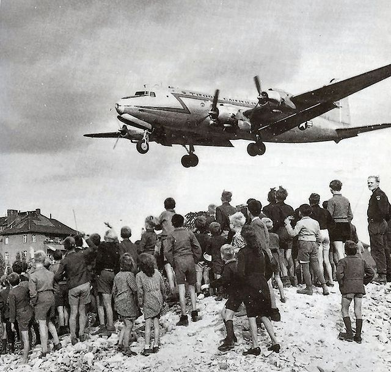
（西柏林市民正在围观一架负责空运行动的“C-54 运输机”降落）
“柏林空运”的同时，西德方面已经着手准备【立宪】，并在次年（1949）5月8日通过新宪法。5月12日，美英法三国军政长官在法兰克福批准新法——标志着【西德正式建国】。
斯大林看到“封锁西柏林”没啥效果，在同一天宣布停止封锁。“第一次柏林危机”以共产党阵营【完败】而收场。
不久之后，苏占区在5月30日通过宪法；10月7日，宪法生效——标志着【东德正式建国】。
由于“东德/西德”之间的关系比较特殊，不同于正常的国际关系。因此“东德与西德边界”也被称作“德国【国内】边界”。洋文称之为“inner German border”。
为了打字省力，本文以下部分称之为“两德边界”。
在1952年之前，“两德边界”的看守还比较宽松（具体参见下面这张照片）。因此，从“东德”逃亡到西方世界，相对比较容易。
根据维基百科的数据，
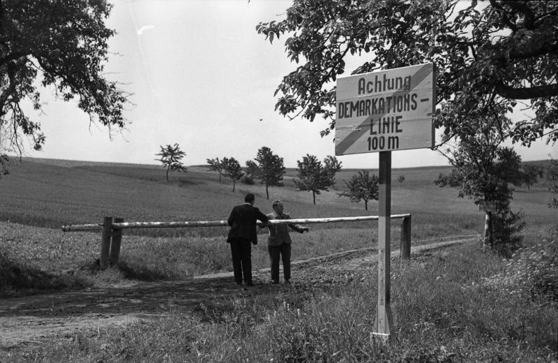
（图林根州边界的路障。摄于1950年）
1952年，东德开始实行一种【边界特殊体制】的政策（洋文叫做“special regime on the demarcation line”）。东德官方的说法是——为了阻止“间谍﹑敌后反动人员﹑恐怖分子和偷渡者”进入边界。当然，这只是台面上的说法，私下里是因为太多东德民众逃亡，严重影响了东德社会的稳定。
为了落实该政策，在“两德边界”构筑了三层次的防御体系——
1. 边界线开垦出一段宽10米的地带（ploughed strip）——安装了【带倒钩】的铁丝网；
2. 紧接着是宽500米“保护区”（protective strip）——该区域的树木和灌木丛全部砍光，房屋全拆，以便让警卫拥有开阔视野。
3. 再后面是一片宽5000米（约3英里）的“限制区”（restricted zone）——只有那些持“特别许可证”的人才能在“限制区”居住或工作。
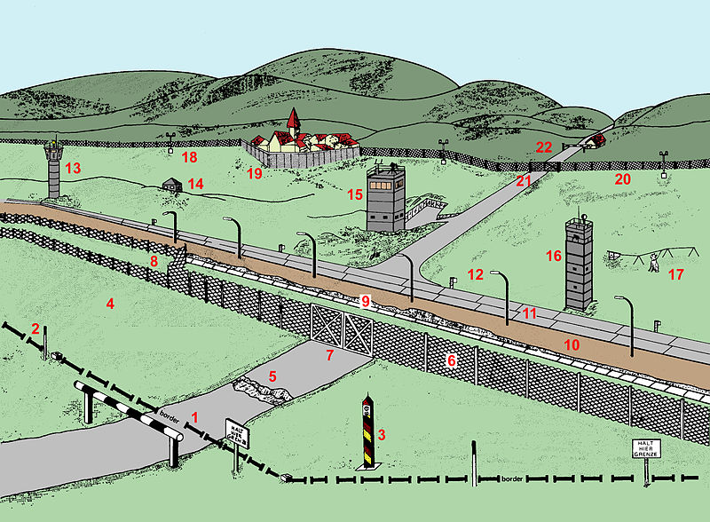
（“两德边界”防御体系示意图）
聪明的东德人民，想出很多办法来突破“两德边境”。比如：发明了下面这种【钩子鞋套】（如下图）
（带有【钩状鞋套】的靴子，能够帮助逃跑者攀越铁丝网）
当然啦，东德有关部门也不是吃素滴——他们在铁丝网上加装了【触发式定向地雷】（如下图）。攀越铁丝网会触发该地雷，地雷爆炸后产生大量弹片，足以致命。
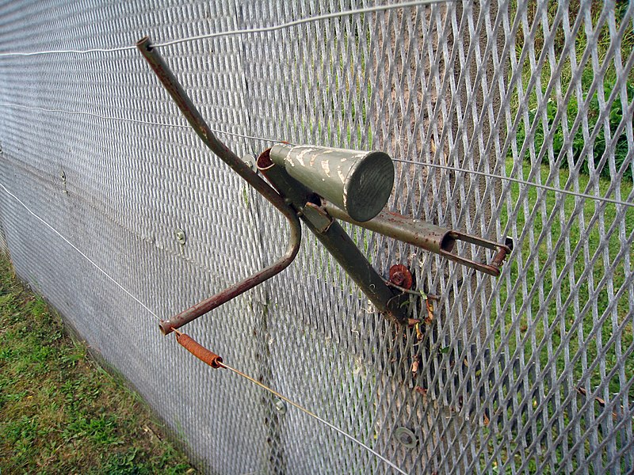
（加装在铁丝网上的【触发式反单兵定向地雷】）
为啥“两德边界”在1952年出现上述巨大的变化？为啥东德政府在这一年突然想要强化边境管理？
这就要聊到——斯大林在1952年抛出了一个所谓的“和平倡议”。他的意思是——让东西德统一，并且【不】隶属东西方阵营的任何一边。因此德国可以作为“北约与华约之间的缓冲地带”，也可以降低双方阵营的紧张关系，有利于东西方和解。
为啥斯大林突然提出这个倡议？如果你以为斯大林善心大发，想要谋求和平，那你就“图样图森破”啦。
在凯南的那篇《苏联行为的根源》已经分析过“苏共扩张的本性”——融合了“俄罗斯民族的本性”与“共产运动的狂热”。而且以斯大林本人的性格，他肯定【不】满足于现有的势力范围。因此，这个所谓的“和平倡议”，显然是一个烟雾弹。
斯大林抛出这个玩意儿，其动机至少有如下几点：
其一，
（前面提到）40年代末50年代初，东德有很多民众逃亡。斯大林当然也了解这个情况。他当然也担心——久而久之，东德就被掏空。
其二，
如果北约答应了这个条件——让东西德统一。由于苏联在东德已经有一定的势力，到时候苏联可以故技重演——再次玩“捷克斯洛伐克的把戏”（参考前面章节关于“二月政变”的介绍）。
其三，
就算美国佬拒绝了这个条件，斯大林还是会有收获。因为斯大林算准了——西德政府非常渴望统一。如果美国方面拒绝这个提议，会让西德政府怀恨在心。从而离间“美德关系”。
后来，美国佬拒绝了斯大林的提议。在这种情况下，苏联方面意识到——短期内不太可能出现“两德统一”，因此就开始强化“两德边境”的管理。
1953年6月16日，“东柏林”某国营公司的300名建筑工人示威游行，抗议“提高工作定额，却不加薪”。这次游行被“西柏林”的 RIAS（美国占领区广播电台）播报之后，在第二天（6月17日）引发东德各大城市的民众走上街头。
东德民众提出的政治口号包括：
因为抗议活动的势头太猛，东德警方控制不住局势，然后由“东德苏联驻军”出动坦克，进行【血腥镇压】，（据不完全统计）至少55人死亡，史称【六一七事件】或【东德起义】（相关维基百科的页面在“这里”）。
（注：东欧剧变及德共垮台之后，勃兰登堡门前面的大街被命名为“六月十七日大街”，以纪念此事）
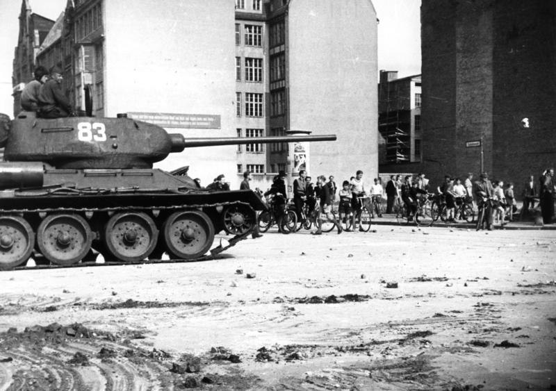
（6月17日，苏联坦克驶入东柏林街头）
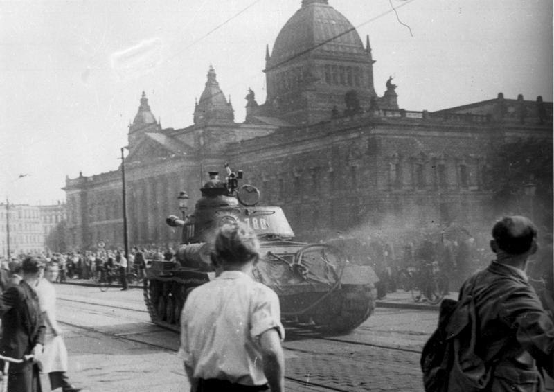
（6月17日，苏联坦克驶入莱比锡街头）
很显然，这次事件进一步刺激东德民众的神经，更多的人开始逃亡。
1952年5月27日，东德政府下发给边境警察的要求中规定：
一直到1982年，通过了《边境法案》——“射杀令”正式升格为法律。在该法案的第27条规定：
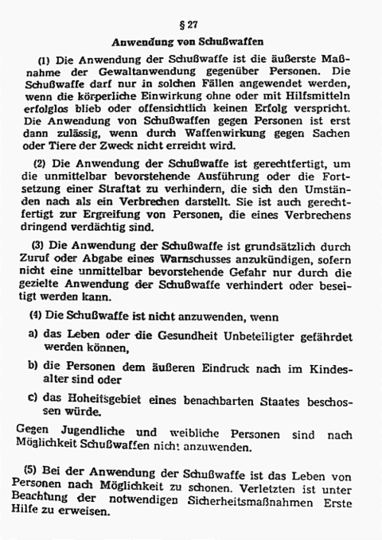
（《边境法案》第27条中对使用武器的规定）
考虑到“两德边界”的防范越来越严密，穿越的风险越来越大，甚至要付出【生命危险】（比如：“射杀令”与“反单兵地雷”）。因此，很多东德民众采用【迂回方式】——
1. 先去“东柏林”旅行；
2. 从“东柏林”穿越到“西柏林”（只需坐公交或地铁就搞定）
3. 办理移民手续；
4. 搭乘航班飞往自由世界。
所以，当1952年“两德边界”加固之后，“西柏林”成为逃亡者的【中转站】。
下面这张是【东德人口趋势折线图】，从图中俺标注的红色箭头可以看出——从1945~1961年，人口趋势明显呈【稳步下降】。1952年【之前】，靠的是——穿越“两德边界”；1952年【之后】，靠的是——“西柏林中转站”。
那为啥到了1961年之后，人口【不再】明显下降？因为柏林墙建成了。下面就要开始聊【柏林墙】。
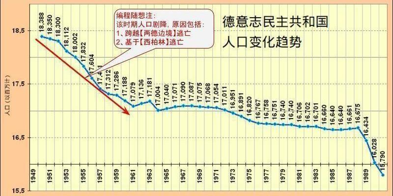
（“民主德国/东德”人口变化趋势图）
前面介绍了【东德民众的逃亡】。到了上世纪50年代后期，以【西柏林】为跳板逃到西方世界的东德人越来越多。而且其中很大比例是【社会栋梁】——知识分子＆中产阶级。按照这个趋势发展下去，不光东德经济会崩溃，整个东德社会都将崩溃。
苏联老大哥开始急眼了。1958年8月28日，时任“社会主义国家共产党和工人党联络处”负责人的尤里·安德罗波夫给裆中央写信，说明了事态的严重程度。信中称：
（注：就是这个“安德罗波夫”，后来升任“克格勃头目”，并在1982年成为苏共总书记——可惜只干15个月就嗝屁了）
就在“安德罗波夫”发出那封信不久之后（11月27日），苏联单方面向“美/英/法三国”发出照会，要求它们六个月内撤出西柏林的驻军，使西柏林成为自由市。
“美/英/法三国”断然拒绝了苏联的无理要求，并且反过来宣称：如果苏联胆敢再次封锁西柏林的陆上交通，北约将不惜诉诸武力。
对北约的威胁，苏联外交部发表强烈抗议。
史称“第二次柏林危机”。
后来的事态发展表面——赫鲁晓夫只不过是在进行【试探】。苏联方面不久之后宣称：所谓“六个月期限”【并非】最后通牒，希望透过“高层会晤”改善东西方关系。
“第二次柏林危机”以苏联老大哥的【又一次】惨败而告终。
时间一晃又过了3年。此时，美国总统从“艾森豪威尔”换成了“肯尼迪”。由于前者是“名将”，且官至“二战欧洲盟军最高指挥官＆北约最高司令官”；相比之下，后者不管在“履历”上还是“面相”上，都显得比较斯文。这种形象上的反差，很容易让人有一种先入为主的【错觉】——似乎“肯尼迪会比艾森豪威尔更温和”。俺合理地推测——很可能赫鲁晓夫就是这么认为滴。
1961年6月，肯尼迪与赫鲁晓夫在维也纳举行美苏峰会，会谈的焦点集中在“柏林问题”。赫鲁晓夫老调重谈，又一次要求“美英法撤出西柏林”。肯尼迪断然拒绝。
肯尼迪总统的强硬，可能让俄国佬有点意外。苏联方面为了加大外交压力，在7月初宣布：苏军暂停复员，军费增加三分之一。
肯尼迪立即作出回应——要求国会追加【32.5亿美元】的国防预算，征召部分后备役人员及国民警卫队入伍，扩大民防及修筑防空措施。
（注：当时的“32.5亿美元”换算成如今，至少有“好几百亿美元”）
进入9月份，赫鲁晓夫单方面撕毁美苏两国为期三年的“禁止核试验协议”，恢复一系列试验。
作为回应，肯尼迪也在9月份宣布：恢复地下核试验，重新开启军备竞赛。
这一系列交锋再次令全球局势紧张，史称“第三次柏林危机”。
前面聊完“第3次柏林危机”起因，再回过头来说本文的主题——【柏林墙】。
其实在那之前好几年，苏联内部就已经在讨论“柏林围墙”的思路。但苏共掌门人赫鲁晓夫对“建墙”这事儿始终挺犹豫——毕竟在柏林这种【国际大都市】搞这么一个围墙，实在太丢人啦——这如何体现“社会主义优越性”捏？显然，这招对苏联方面而言，属于【下下策】。
一直拖到了上世纪60年代初，逃亡的情况已经越来越严重，苏共领导层也就顾不上“面子问题”，准备要【筑墙】。
共产党阵营为了掩饰自己的尴尬，把即将兴建的柏林墙称之为
1961年发生的“第3次【柏林危机】”，可以视作赫鲁晓夫的【最后一次】试探。如果能成功吓跑西柏林的北约驻军，再把西柏林吞并掉，那就无须采用“建墙”这个【下下策】。可惜他碰到的美国总统肯尼迪，立场还挺强硬。到了7月底，赫鲁晓夫大概也觉得“外交恐吓”这招行不通，终于开始考虑这个【下下策】。
1961年8月1日，苏共头子赫鲁晓夫与德共（统一社会党）头子乌布里希通电话，首次提及“建墙”。“柏林围墙”开始摆上议事日程。
1961年8月12日（星期六），东德领导班子开会，由乌布里希正式签署命令——开始修筑柏林围墙，行动代号“玫瑰”。
话说德国佬办事效率就是高，有关部门说干就干，当天深夜就开始动工。次日（8月13日）是星期天。当西柏林市民出门的时候，惊讶地发现——整个西柏林已经被【团团围住】。有些地方被铁丝网围住，有些暂时来不及建铁丝网的地方（比如街道/路口）被“工人阶级战斗队”封锁了。
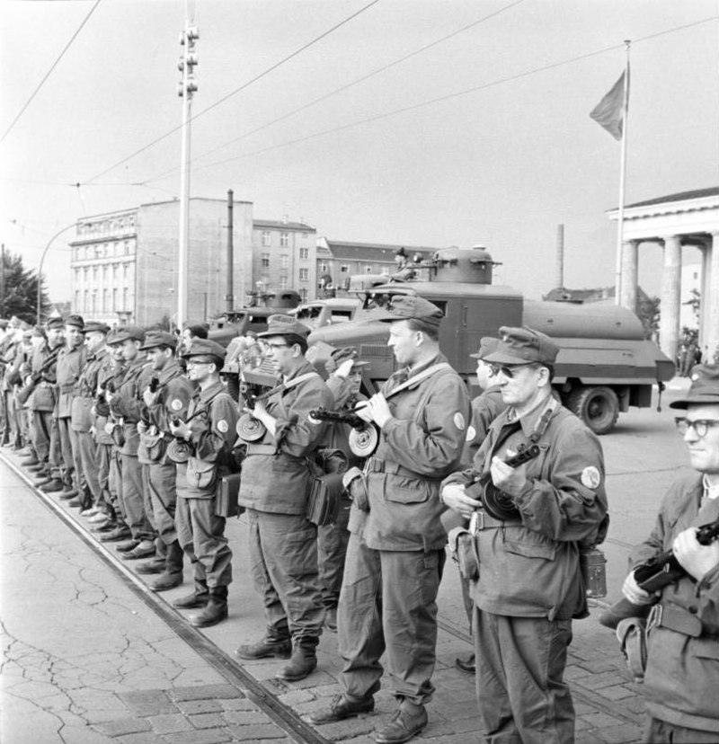
（1961年8月13日，东德的“工人阶级战斗队”封锁勃兰登堡门附近的边境）
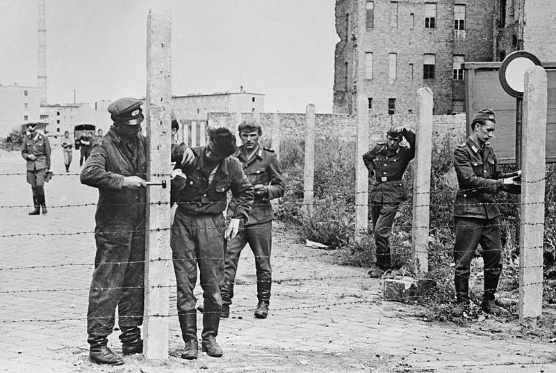
（1961年8月14日，东德士兵开始为建柏林墙而架设铁丝网栅栏）
柏林墙建成之后，继续给西柏林留下一些陆上交通的出入口。为了防止东德民众逃亡，这些出入口都设立了专门的【检查站】。以下这张地图标出了整个柏林墙所有的检查站。
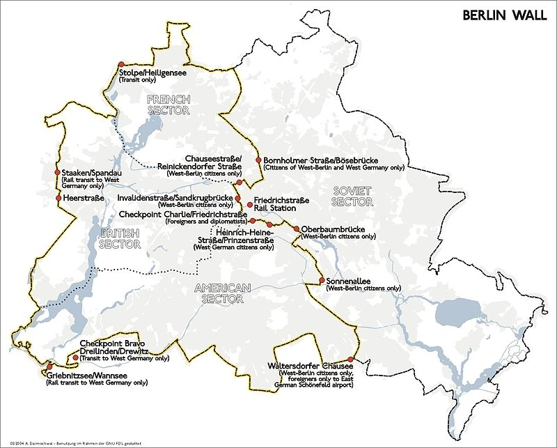
（柏林墙检查站示意图）
本来到了10月初，“第3次柏林危机”已经开始缓和。那个时候正在开“苏共22大”，赫鲁晓夫在大会的某个讲话中已经提到——暂时搁置柏林问题。
谁知道这时候冒出了一个外交上的小插曲（应该在双方高层的意料之外），使得本来已经缓和的“柏林危机”迎来新高潮。
话说那时候的“柏林墙”已经初具规模，在它的诸多检查站中，有一个位于柏林市中心的腓特烈大街，名叫做“查理检查哨”。它原名“C 检查哨”。在“字母报读法”中，这个“C”通常念作“Charlie”，后来就被称为“查理检查哨”。
10月22日这天，美国驻柏林代表团副团长艾伦·莱特纳乘车经过“查理检查哨”，想去东柏林看一场演出。之前，北约军事人员只要挂着【军用车牌】，就可以随意往返东柏林/西柏林（【无需】出示证件），而东德方面也默许这种行为。但在那天晚上，柏林墙的警卫要求出示证件（可能是因为柏林墙建成后，边界警卫也调换了）
艾伦·莱特纳作为代表团的副团长，估计火气比较大，不予理会，直接开车硬闯，结果被东德方面扣下来。后来由“驻西柏林美军司令部”派宪兵去东柏林交涉，才把这位副团长接回来。
第二天（23日），东德官方发表通告——所有外国人通过柏林墙检查站都必须出示证件。
但某些美国佬不信邪，25日这天，某美军军官开着军车通过“查理检查哨”，拒绝出示证件，当然再次被拦住。这位军官威胁东德警卫：不让老子通过？！一小时之内叫坦克来开路！
东德警卫被吓坏了，赶紧上报，最后一直捅到苏军元帅科涅夫那里。他下令让苏军坦克也出动。
于是就出现了“第3次柏林危机”的【高潮】——美苏坦克在“查理检查哨”对峙。而且双方都出动多辆坦克，全都上了实弹，并瞄准对方。
在整个冷战期间，这大概是唯一的一次，美苏双方的坦克如此近距离对峙。
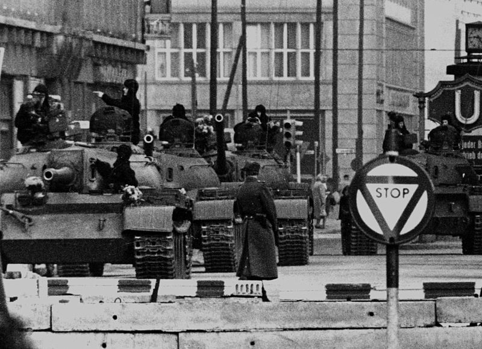
（位于“查理检查哨”东柏林一侧的苏军 T-55 型坦克。摄于1961年10月）
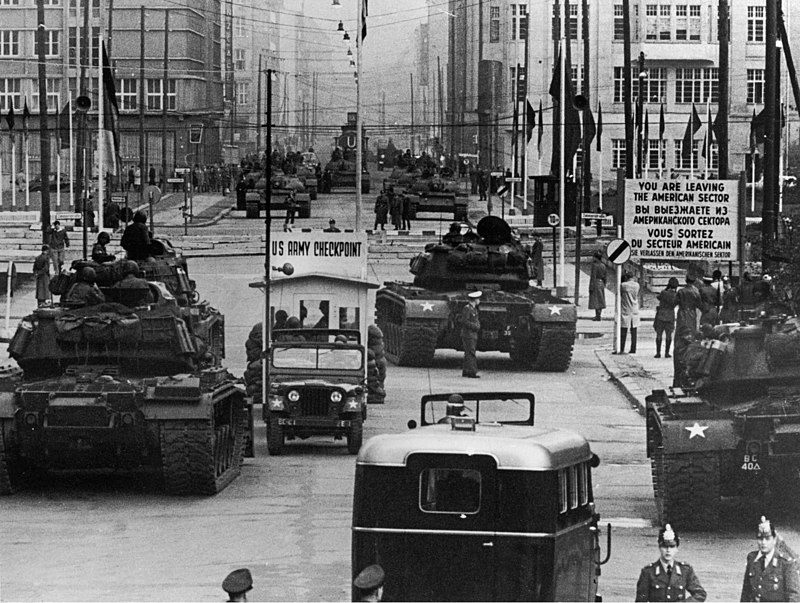
（“查理检查哨”，美军 M48 型坦克 VS 苏军 T-55 型坦克。摄于1961年10月）
对峙了2天之后，又是赫鲁晓夫先让步——他先下令苏军坦克撤回；然后美军坦克也后撤。危机才解除。
在这2天时间里，先是“东柏林/西柏林”的双方驻军进入战备状态；然后是“东德/西德”的双方驻军进入战备状态；最后是东西方阵营的【战略部队】（战略轰炸机、战略核潜艇）进入战备状态。其紧张程度，堪比“古巴导弹危机”。
1961年的“柏林墙”，主要还是铁丝网（参见前面小节的照片）。早期那种铁丝网当然是不堪一击——拿个铁钳都可以搞定。
东德有关部门第二年就开始【升级】柏林墙，大致经历了如下几个阶段。。
不但“墙”本身的材料改进了，而且整个“防御体系”也改进了（参见下面的示意图）
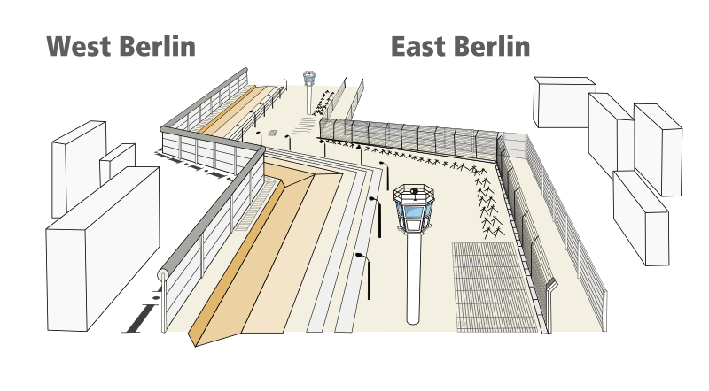
（【多层次】防御体系的示意图）
为了帮大伙儿理解上述这张示意图，下面分别列出图中的含义：
从【右】到【左】分别是——

（照片中的开阔地被逃亡者称作【死亡地带】。摄于1977年）
前面聊“两德边界”时提到的【射杀令】，这个玩意儿同样也适用于“柏林墙”。
前面说了，“柏林墙”建造时，距离边界线预留了几米的间隙。也就是说——在柏林墙的【西柏林】一侧，有一小块空地依然属于【东德】。但西柏林的民众如果走到那块空地上，反而【没啥】危险——柏林墙的守卫根本就【不】关心西柏林这一侧。请注意：守卫的枪口都是对着东柏林那边（本国民众），所有的防御措施也都是用来对付【本国民众】——这也就是“柏林墙”充满【反讽】之处。
由于西柏林这一侧【没危险】，西柏林的民众反而可以在墙上涂鸦。久而久之，“柏林墙涂鸦”成了西柏林靓丽的风景线。
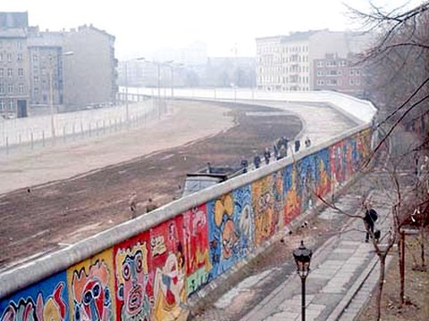
（西柏林一侧的涂鸦，墙另一边的空地，对东柏林民众而言就是【死亡地带】。摄于1986年）
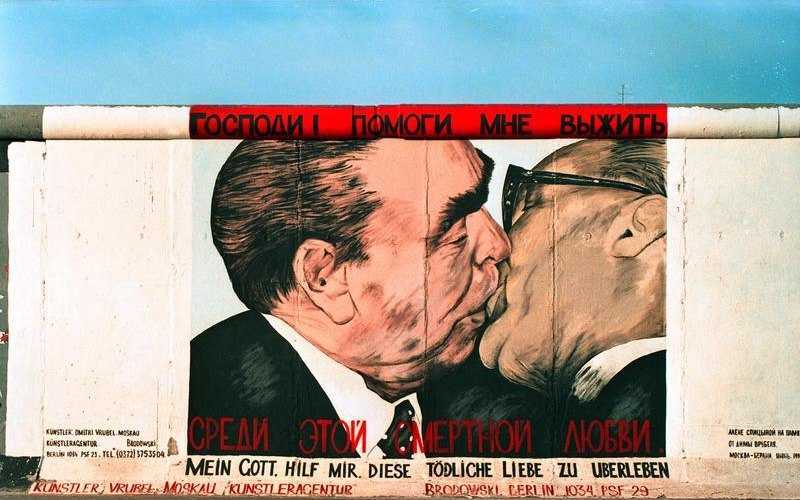
（知名的柏林墙涂鸦——“苏共总书记勃列日涅夫”与“德共总书记昂纳克”）
注：勃列日涅夫喜欢在外交场合“亲密拥抱＆接吻”，以强化“同志般的友谊”（在这个上下文中，“同志”一词愈发凸显其双关性）
上述这幅涂鸦还有一个标题【My God, Help Me to Survive this Deadly Love】。
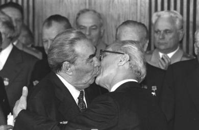
（上述涂鸦对应的【真实照片】）
关于“翻越柏林墙”，涌现出许多感人的故事。十年前（推倒柏林墙20周年）俺发了一篇博文《学习一下德国人民的翻墙精神》，介绍这些故事。
当年那篇博文，【转载】了网上流传的一篇文章，标题是《翻越柏林墙的故事》。那篇文章已经写得足够好，俺水平有限，没法写得比它更好了。想看的同学，请猛击上述这篇博文的链接。
在当年那篇博文的开头，俺加了如下这段话：
有两位著名的美国总统，针对柏林墙发表了两篇著名的演讲——分别是在“墙建成之后两年”以及“墙倒塌之前两年”。
1963年6月，时任美国总统肯尼迪应邀访问柏林，并向西柏林民众发表公开演讲。
以下是演讲的【全文】：
（肯尼迪总统在柏林墙演讲的电视画面）
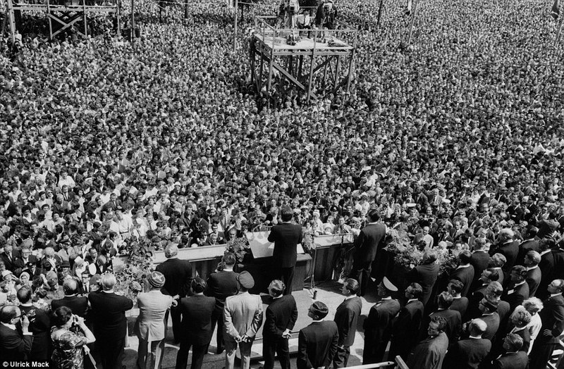
（肯尼迪总统在柏林墙演讲的鸟瞰图）
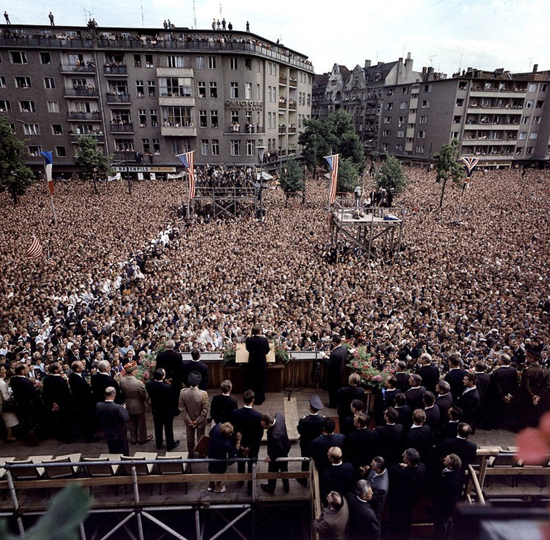
（肯尼迪演讲时，对面大楼的窗户、屋顶挤满听众）
关于肯尼迪的这个演讲，若干年之后出现一个【讹传】（并被很多人信以为真）。其大意是：肯尼迪演讲中那句德语（
相信了这个说法的人，应该是“只知其一不知其二”。
以下摘自中文维基百科（这个链接），引文中的粗体是俺标注滴。
以下摘自英文维基百科（这个链接）
1987年6月，里根在参加完“七国峰会”之后，短暂到访柏林，并在柏林墙附近的“勃兰登堡门”发表演说，标题是《推倒这堵墙！》。
负责写这篇讲演辞的“彼得·罗宾逊”在之前已经走访了西柏林，他意识到西柏林的居民都很痛恨这堵墙，所以把这句话（Tear down this wall!）写入讲稿。
美国政府的高官以及里根总统的高级幕僚（比如：国安顾问克林·鲍威尔、白宫幕僚长霍华德·贝克）都要求删去这句话——他们认为这句话太“冲”了，会刺激苏联，并使冷战升级。
但里根总统本人看过演讲稿之后，对这句话大为赞赏，并坚持要保留。最后，这句话甚至成为该演讲的【标题】。
（注：在《苏联是如何被慢慢勒死的？——聊聊冷战中美国的遏制战略》一文中，俺介绍过——冷战期间的美国总统，里根是对苏联最强硬滴，没有之一）
整个演讲中最有名的是如下几段：
这篇演讲之后不久（约两年半），柏林墙垮掉了。
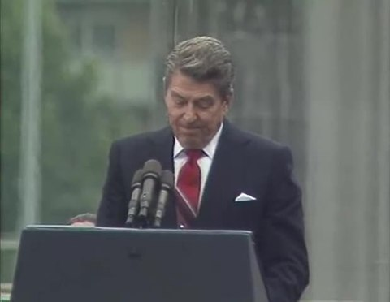
（里根总统在柏林墙演讲的电视画面）
（里根总统在柏林墙演讲，背后是大名鼎鼎的【勃兰登堡门】）
由于发表演讲的地点距离柏林墙太近，美国特勤局担心东德狙击手，特地在讲台【背后】竖立了防弹玻璃。
另外，坐在他身后的那个胖子，在德国统一后成为首位民选总理
不论是“反共人士” or “亲共人士”，很多都把“东欧剧变”归咎于戈尔巴乔夫。但其实过于夸大了戈氏的作用。应该负更大责任（或者说“应该受更多赞美”）的那个人，其实是勃列日涅夫（也就是前面喜欢 kiss 的那个家伙）。此人治国无能，却统治苏联十多年，苏联正是在他手中逐步滑向深渊。
东欧剧变的背景是——到了80年代中期，苏联经济已经垮掉了。作为共产党阵营的老大哥，苏联不但无法抗衡冷战的外部压力，甚至连“打击国内分离运动”都显得力不从心。
正是在这个背景之下，戈尔巴乔夫在80年代发起政治改革（号称“新思维”），并放弃对东欧卫星国的控制。对他而言，纯属无奈之举。
一旦苏联放弃对卫星国的控制，作为最亲近西欧的共产党国家。“匈牙利＆捷克斯洛伐克”很快就转向自由世界，并且放开与西欧国家的边境。
之前，东德政府对边界的控制，全都集中在“两德边境”与“柏林墙”。对捷克斯洛伐克接壤的边境没啥防范。所以东德民众立即发现了逃亡的新途径——以【捷克斯洛伐克】作为中转站。
再次回顾前面曾经贴过的那张趋势图（注意俺标注的红色箭头）。从中可以看出——单单1989那年，人口再次出现急剧下跌。
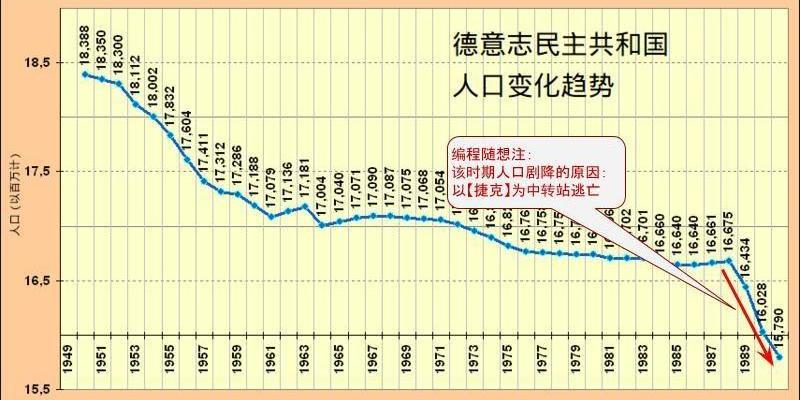
（“民主德国/东德”人口变化趋势图）
当“波兰、捷克斯洛伐克、匈牙利”纷纷转向，东德民众深受鼓舞，也搞了大规模抗议示威。其中引领东德潮流的是——莱比锡民众的【周一游行】。从9月4日开始，莱比锡民众【每个】星期一的晚上都要搞游行。一周又一周，游行的规模越来越大——这样的招数，在东德40年的历史上从来没有过。
经过【西方】新闻媒体的报道，其它很多城市都被莱比锡鼓舞，并且效仿。最后连首都（东柏林）也爆发了规模浩大的抗议示威（如下图）

（11月4日大游行。摄于东柏林亚历山大广场）
1989年，在内外交困之下，德共领导层几个重要的人物纷纷辞职。影响最大的是“两个埃里希”（这两个老家伙的名声，都臭大街了）
10月18日，埃里希·昂纳克辞职
此人是德共头子，担任总书记长达18年。他也就是前面那幅涂鸦中，亲密接吻的两个老男人之一。
他辞职的官方说法是“健康原因”，但德国老百姓都晓得是咋回事儿。
11月7日，埃里希·梅尔克辞职
此人是臭名昭著的【斯塔西】负责人，在位时间长达32年。该部门类似于小说《1984》中的【友爱部】，以及纳粹德国的【盖世太保】。
（在本文末尾的章节，俺还会再聊到这个部门）
一方面是“长期当权的一把手突然辞职”，另一方面是“突然出现人口外逃高峰”。此时的东德官僚体系，已经彻底乱了方寸。德共（统一社会党）领导层想了一招——“放宽旅行限制”——企图挽回一点民意。
11月9日这天，中央政治局委员沙博夫斯基召开记者招待会，宣布“放松旅游限制”的新政策。当时德共领导层还【没】打算立即实施这个政策，只是先开一个发布会吹吹风。
但沙博夫斯基在开新闻发布会之前，才匆忙看了手头的相关文件。他【误以为】这个政策是立即实施。
发布会上，有两个记者分别问他：“是否立即生效？”他都非常确定地说“是”。（之所以问两次，因为在场的记者都感到震惊、难以置信）然后又有两位记者分别问：“新政策是否包含西柏林”，他又两次都给出【肯定的回答】。
不得不感慨：这个“沙博夫斯基”堪称“傻逼夫斯基”，不愧是共产党里面的【猪队友】 :)
当晚19:17，西德媒体 ZDF 率先播发这条【爆炸性新闻】；其它媒体纷纷跟进，反复播放。当年的东柏林市民，大都收听西柏林的广播。很多人听说这个消息，都爽呆了。几个小时后，柏林墙的各个检查站聚集了上万人。
在这个紧要关头，最尴尬难办的，是柏林墙的守卫。一方面，他们【没有】得到上级“开放关卡”的命令；另一方面，随着聚集的人群越来越多，局面随时会失控。某些检查站的指挥官向上级请示。可惜当时的东德政府，已经非常混乱。在这种关键时刻，高层【无人】愿意承担责任，尤其是没人敢下达镇压的指令。因为官僚们都意识到——这个政权快完蛋了，谁下达镇压的指令，用不了多久肯定被送上法庭。
最终，某个检查站的军官（哈拉尔德·杰格）在绝望之际，【私自下令】打开关卡，让所有人过境；其它检查哨也纷纷效仿。就在那一刻，从逻辑意义上讲，【柏林墙倒塌了】。

（哈拉尔德·杰格——第一个开放柏林墙关卡的军官。这是他年轻时的照片，摄于1964年）
关于这位“哈拉尔德·杰格”，他的故事可以参见如下这篇博文：
《处在历史转折点的小人物们——回首80年代的几则往事》
检查站首次开放的时间已经在午夜时分，更多的东柏林市民在次日早晨才涌入西柏林。
西柏林市长沃尔特·莫波尔在11月9日夜里已经紧急下令：向每个东德移民提供临时住宿，并且每人发放100西德马克作为临时开支。
那几天，整个柏林（不论东边 or 西边），都陷入狂欢。西柏林很多酒吧自愿免费供应啤酒，供狂欢的民众畅饮......
由于东柏林的物质极度匮乏，很多东德人拿着临时发放的100马克到西柏林商店购买之前很难买到的商品（比如香蕉）。西柏林的商店很快就被抢购一空。
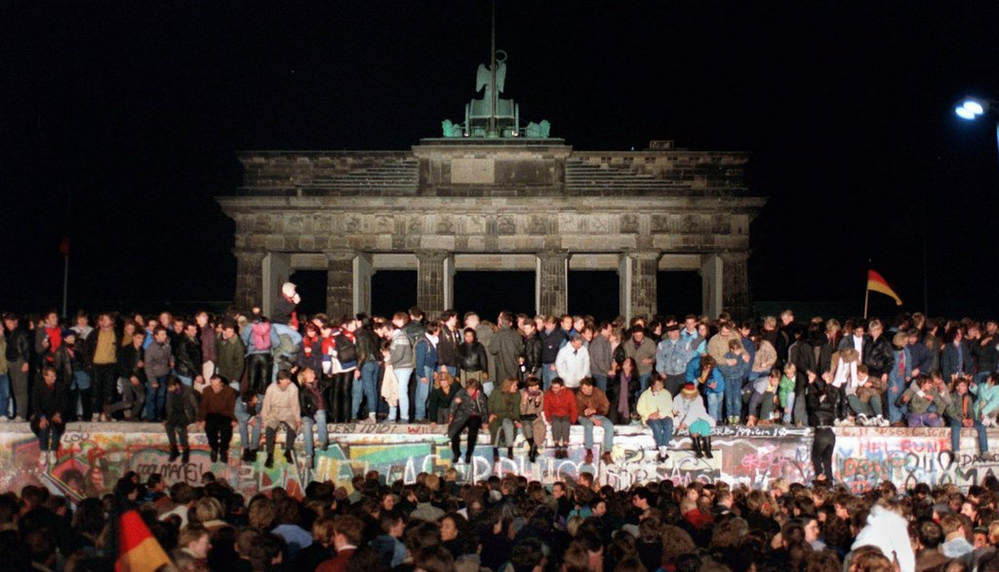
（11月10日夜间，来自东西柏林的群众站在柏林墙上庆祝两德边境开放，背景建筑是柏林地标——“勃兰登堡门”）
德国现任总理默克尔在“推倒柏林墙25周年纪念日”（2014）接受采访时说道：
在11月9日这个“历史性转折点”之后，不论东边还是西边，都有大量民众拿着铁锤/凿子/榔头等工具，在围墙下搞破坏。有些人把敲下来的混凝土块拿回家留作纪念。这些人被形象地称作“围墙啄木鸟”（德语叫：mauerspechte）。
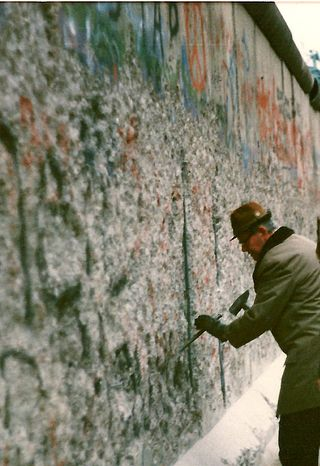
（“围墙啄木鸟”。摄于1989年11月）
1990年6月13日，东德官方正式下令拆除柏林墙（由军方实施）。军队的效率当然比“围墙啄木鸟”高得多。大约到1991年11月，“柏林围墙”消失了。
前面俺提到——斯塔西负责人在11月7日辞职。
由于“Stasi”这个招牌实在太臭了，东德政府在11月17日将其改名为 AfNS（Amt für Nationale Sicherheit）。12月8日，东德总理汉斯·莫德罗决定【解散】该部门。
12月下旬，其内部开始销毁【秘密档案】，但被东德民众发现。一大批东德民众冲破警卫的阻拦，占领了原斯塔西总部大楼。最终的清点发现——有大约 5% 的秘密档案被销毁。
（冲进斯塔西总部的示威者，
标语上写
东西德合并之后，上述【秘密档案】开始被逐步整理，并允许每个东德民众查阅【自己的】秘密档案。从而曝光了德共大规模的秘密监视。
比如说：某个东德的政治异议人士（女性），在查阅了自己的秘密档案之后，惊讶地发现，有些事情只有她与丈夫知道，结果秘密档案中都有详细记录。后来她丈夫承认自己充当了斯塔西的【线人】。
对那些【重点关注对象】，“秘密档案”的详细程度令人叹为观止。比如这个人几点几分出门，几点几分经过某个路口，几点几分在路上与谁打过招呼、几点几分在哪个水果摊买了哪种水果......
最终的统计，大约有600多万人被斯塔西设立秘密档案，超过东德总人口的【三分之一】。斯塔西内部有九万一千名正式（在编）探员，在东德有“十七万五千名”编外探员（称作“通报合作者”），另外在西德还有大约两万名“通报合作者”（充分说明西德也被共党【严重渗透】了）
11月17日，东德成立了联合政府，在联合政府的26名内阁成员中，统一社会党（德共）只占15位；
12月1日，人民议会（国会）通过宪法修正案，删去了宪法里“工人阶级和马列主义政党领导地位”的条款；
12月3日，德共中央委员会、总书记全体辞职。该党举行特别代表大会，取消原先的“中央委员会＆政治局”，通过了新的党章。新党章中【不再】包含“列宁主义”。
次年（1990）2月4日，“统一社会党”更名为“民主社会主义党”。
次年（1990）3月18日，举行了东德史上首次（也是仅有的一次）【自由选举】。投票结果参见维基百科的链接（这里），曾经一党独大的“德共/统一社会党/民主社会主义党”，在那年的选举中仅仅得到【16.4%】的票数，沦为议会“第三大党”。
5月18日，“东德新政府”与“西德政府”签署国家条约，条约规定了两德将建立货币、经济和社会联盟；
7月1日，条约生效，“东德马克”退出流通；
10月2日，东德政府机关停止工作，西德接收了东德的驻外使领馆。
10月3日，两德统一的盛大庆典在柏林举行，两德正式宣布统一。
12月，举行了自1933年以来第一次覆盖全德国的“自由选举”。赫尔穆特·科尔当选德国重新统一后的首位总理。
虽然柏林墙已经拆除，但在一些重要景点依然保留了小段墙体，作为历史遗迹，供游客参观。
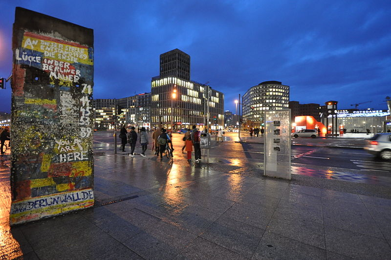
（波茨坦广场保留的一小段围墙。摄于2009年）
这些遗迹在提醒人们——千万【不要】忘记历史的教训！！！
俺博客上，和本文相关的帖子（需翻墙）：
《学习一下德国人民的翻墙精神》
《苏联是如何被慢慢勒死的？——聊聊冷战中美国的遏制战略》
《处在历史转折点的小人物们——回首80年代的几则往事》
《聊聊“核战略的博弈模型”与“中美新冷战”》
《为什么马克思是错的？——全面批判马列主义的知名著作导读》
《人类自由的三大死敌——谈谈“共产运动、纳粹主义、政教合一”的共性》
《影评：＜苏维埃往事＞——帮你看清苏联和纳粹的共同本质》
《最“纯正”的共产主义政权——红色高棉简史》
《面对共产党——民国人文大师的众生相》
俺简单说明一下：对于某些重大事件的纪念日，俺如果总是在当天（或前后一天）发【相关的】博文，“线上活动”会呈现出明显的【可预测性】。这对于“安全防范＆隐匿性”【不利】。
考虑到【30周年】属于重大纪念，今天俺特意发了【原创】博文，而且是【长篇】哦。图片很多，大伙儿慢慢看。
★序曲
聊“东西德与柏林墙”，当然要从“纳粹战败”开始说起。
话说1945年4月，苏军攻入柏林，“柏林战役”开打。4月30日，苏军距离纳粹总理府仅剩2个街区，臭名昭著的纳粹头子希特勒自杀。希特勒在政治遗嘱中指明：由海军元帅卡尔·邓尼茨接替其“总统职务”，由臭名昭著的“忽悠部部长”戈培尔接替其“总理职务”。
顺便普及个小知识：
希特勒本人身兼“总统 ＆ 总理”。为此，专门给他量身定做一个特殊职务，德语称作“Führer und Reichskanzler”，中文翻译为“元首”。但这个翻译很容易产生误会——因为其它一些外来词汇也被翻译为“元首”。在前几年某篇谈翻译的博文（链接在“这里”），俺专门吐槽过这个翻译。
由于戈培尔身在柏林，希特勒死后次日（5月1日），他也自杀（而且是全家自杀）。至此，邓尼茨成为“第三帝国”的主要负责人，但他在这个位置上只待了一星期，德国就无条件投降了。本来邓尼茨提出：要与英美单独讲和（单方面停战），但被艾森豪威尔拒绝了。邓尼茨只好在5月7日签署《德国无条件投降书》。
邓尼茨的【功劳】在于——他在短短的几天时间里，执行了一个【大规模撤离计划】（代号“汉尼拔行动”）——从德国东部（包括“东普鲁士”和某些德占领区）撤出了大约200万人口，其中有30万德军。即使在5月8日（正式签署《德国无条件投降书》的次日），由94艘船组成的庞大船队还从拉脱维亚某港口运走一万八千人到西方。
从某种意义上讲——邓尼茨帮助那200万人摆脱了共产运动的魔爪。
★占领
◇从“3个占领区”变为“4个占领区”
下面这张地图标识了纳粹德国“无条件投降”时，美苏双方军队的实际控制线。后来划分各国占领区的时候，原则上按照战前德国各州的边界划分，美国兵从图中的紫色区域撤出。至于图中的黑色粗线条——就是日后的【两德边界】。
（纳粹德国投降时，东西方阵营军队的【实际控制线】）
其实刚开始是“美、英、苏”三国占领德国，没法国啥事儿。后来法国佬非要来分一杯羹，美国佬与英国佬碍于面子，各自划了一小块——就成为后来的“法国占领区”。
（4国瓜分德国）
◇小插曲——萨尔保护领
在上述这张“德国占领区地图”，俺特意标注“萨尔保护领”。
前面提到：“法国佬非要来分一杯羹”。法国佬当然不是来义务劳动滴，戴高乐有自己的小算盘，而其中之一就是这个“萨尔保护领”。法国佬坚持说：此地不属于德国！于是搞出来这么个玩意儿。那地方面积很小，但矿产丰富，而且正好处于“法德边境”。真可谓“戴高乐之心，路人皆知”。
可惜戴高乐的如意算盘终究落空——当地后来（1955）搞了【全民公投】，与德国（西德）合并。
◇瓜分柏林
“美/苏/英/法”瓜分德国之后，由于柏林是纳粹德国首都，地位特殊。因此柏林也一分为四（参见如下地图）
（4国瓜分【柏林】）
下面这张照片是——“美、苏、英、法”的军方4巨头在柏林合影。照片中从左到右依次为：蒙哥马利（英）、艾森豪威尔（美）、朱可夫（苏）、塔西尼（法）。
（“盟军四巨头”在柏林合影留念。摄于1945年6月5日）
★铁幕
◇（1945年）“古琴科事件”——冷战的导火索
伊格尔·古琴科（Igor Gouzenko）是“格鲁乌”（GRU，全称“苏联红军总参谋部军事情报局”）的译电员，在苏联驻加拿大使馆工作。1945年9月5日，他带着【密码本＆109份绝密文件】叛逃到西方。
他的叛逃直接导致——苏联安插在欧美各国的谍报网遭到毁灭性打击。正是因为古琴科的功劳，美国高层才意识到——制造原子弹的“曼哈顿计划”早就被苏联渗透了。
（伊格尔·古琴科）
小插曲——物理学家费曼的【间谍朋友】：
著名的理论物理学家费曼（也就是前不久俺介绍【费曼学习法】提到的那个费曼）在其传记《别闹了，费曼先生》中回忆（以下是俺转述的大意）——
当他参与“曼哈顿工程”时，跟他同宿舍有个朋友叫“福斯”。那时候费曼自己没有汽车，为了去另一个城市探望生病的妻子，经常要借用福斯的小轿车。
后来美方破获了“洛斯阿拉莫斯”（新墨西哥州的核弹研发基地）的苏联间谍网，费曼这个朋友就是其中一个苏联间谍。
（“古琴科事件”半年之后）1946年3月5日，英国首相温斯顿·丘吉尔在美国密苏里州的威斯敏斯特学院（Westminster College）发表题为《和平砥柱》（The Sinews of Peace）的演讲，其中提到：
从波罗的海边的什切青到亚得里亚海边的的里雅斯特，一幅横贯欧洲大陆的【铁幕】已经拉下。这张铁幕后面坐落着所有中欧、东欧古老国家的首都──华沙、柏林、布拉格、维也纳、布达佩斯、贝尔格莱德、布加勒斯特和索菲亚。这些著名的都市和周围的人口全都位于苏联势力范围之内，全都以这种或那种方式，不仅落入苏联影响之下，而且已受到莫斯科日益加强的控制。【铁幕】一词虽然不是丘吉尔首创，但因为他这个演讲而广为人知。该演讲经常被称作【铁幕演说】（Iron Curtain Speech），通常也视之为冷战开端。
◇（1946年）乔治·凯南提出【对苏遏制战略】
虽然“古琴科事件”标志着美苏关系【恶化】。但美国方面尚未想清楚如何对付苏联。当时美国外交界存在三种流派（战略），分别是：
1. 放弃欧洲——重回“孤立主义”
2. 先下手为强——对苏进行“预防性军事打击”
3. 以“联合国框架”拉拢苏联——重新划分全球势力范围
事实上，这三种做法都【不】理想。当时美国外交界正在发愁。
就这时（1946年2月），一个当时名不见经传的【小人物】乔治·凯南，靠着一封（5000多个单词的）“长篇外交电报”，一举成名。他指出了【第4条道路】，并奠定了“美国对苏遏制战略”的基础。后来，他被研究“冷战史”的学者称作【遏制战略之父】。
（乔治·凯南。摄于1947年）
为啥原先的三种外交流派都不理想？为啥乔治·凯南这个小人物能够脱颖而出？他的【遏制战略】到底是啥样滴？
聊这些需要花很多口水，而且俺之前已经聊过了，故本文不再讨论。感兴趣的同学，可以去看俺的另一篇博文《苏联是如何被慢慢勒死的？——聊聊冷战中美国的遏制战略》
另外，乔治·凯南在1947年发表了一篇文章《苏联行为的根源》——堪称其【代表作】（“俺的网盘”分享了中英文电子版）
美国外交大师基辛格对这篇文章的评价很高，他说道（大意）——除了乔治·凯南，没人能用如此短的篇幅，如此深刻地分析“苏联行为的根源”。
◇（1948年）捷克斯洛伐克的“二月政变”——铁幕的加剧
二战刚结束后，捷克本来是【多党制】的政府。当时的内政部部长是“捷共”党员，此人通过各种手段在安全部门与警察部门安插共党成员，并排挤其它党派的人士。
1948年2月，参与组阁的12名【非】共产党部长提出“集体辞职”，想要以此向“捷共”施加压力。当时的总统爱德华·贝奈斯【不是】共党，因此这12名部长认为总统会挽留他们，并能迫使内政部长作出某些让步。
谁料到，“捷共”动员国内的“亲共分子”组织示威抗议，然后苏联红军以此为借口，陈兵边界，摆出一幅准备动武的样子。最终，总统爱德华·贝奈斯怂了，接受了这12名部长的辞职。于是“捷共”完全控制了内阁，不久又完全控制了议会。最终，捷克斯洛伐克堕落为【共产党国家】。而原来的总统爱德华·贝奈斯也被共产党赶走了。
◇（1948年6月）德国货币改革——标志着“美/英/法三国占领区”【合并】
捷克斯洛伐克的“二月政变”极大地刺激了美国佬，杜鲁门政府意识到——必须采取措施，否则整个中欧地区迟早会沦陷。
1948年2月~6月，“美国、英国、法国、比利时、荷兰、卢森堡”六国在伦敦召开外长会议，提出所谓的“伦敦建议”，内容为：“美/英/法”3个占领区统一协调经济政策，共同管制对外贸易，最终达到“共同制宪”并成立“联邦德国”，然后以“联邦德国”为核心，复兴整个欧洲。6月18日，美英法三国宣布：从6月21日开始，三国占领区实行新货币改革，并发行标有【B 记号】的“西德马克”（字母 B 源自德语“Bundesrepublik Deutschland”）。
苏联方面不甘示弱——在随后一天（6月22日）宣布，苏联占领区也实行货币改革，发行新的【D 记号】马克（字母 D 源自德语“Deutsche Demokratische Republik”）。至此，德国开始走向分裂（之前虽然有4个占领区，但名义上还是“一个德国”）。
★分裂
◇分裂后的【三个】德国——东德、西德、西柏林
很多人以为德国分裂之后变成2个，其实是【3个】，分别是：东德、西德、西柏林。具体原因，且听俺细细道来。
（本文前面提到）“美/苏/英/法”瓜分德国之后，由于柏林是纳粹德国首都，地位特殊。因此柏林也一分为四。后来货币改革，“美/英/法”3个占领区合并，因此柏林的“4块”也就变成“2块”，分别称作“东柏林、西柏林”。东柏林就被苏联定为东德的首都；而西柏林则处于【非常特殊】的地位。
很多人【误以为】“西柏林”是“西德”的飞地。严格来讲，并不是！比如说：“西柏林的护照”与“西德护照”不同，其【国籍】一栏写的是“西柏林市”；另外还有其它一些法律上的差异（俺这里就不展开了）
（三分德国，图中一小块黄色的，就是【西柏林】）
◇（1948年6月）苏联封锁西柏林——史称“第1次【柏林危机】”
刚才说到“货币改革”，以及“德国一分为三”。在这种局面下，“西柏林”如同插入“东德”内部的钉子，当然让苏联掌门人（斯大林）很不爽。
斯大林指示东德方面，（从6月24日开始）全面切断西柏林的“水陆交通”，使得日用品无法运入西柏林——斯大林企图用这招逼迫美国方面放弃西柏林。
然而，【遏制战略】已经成为美国政界/军界的共识。美国方面紧急应对，发起历史上规模最庞大的【柏林空运】。空运历时大约1年（1948年6月~1949年5月），累计起降运输机277,728次，空运货物211万吨。到了“柏林空运”的后期，每天通过运输机提供的日用品甚至【超过】之前通过陆路运输提供的数量。
（注：虽然东德切断了“水陆交通”，但西德的航班依然能飞往西柏林）
（西柏林市民正在围观一架负责空运行动的“C-54 运输机”降落）
◇“第一次柏林危机”之后——东西德分别建国
“柏林空运”的同时，西德方面已经着手准备【立宪】，并在次年（1949）5月8日通过新宪法。5月12日，美英法三国军政长官在法兰克福批准新法——标志着【西德正式建国】。
斯大林看到“封锁西柏林”没啥效果，在同一天宣布停止封锁。“第一次柏林危机”以共产党阵营【完败】而收场。
不久之后，苏占区在5月30日通过宪法；10月7日，宪法生效——标志着【东德正式建国】。
★逃亡
◇德国【国内】边界
由于“东德/西德”之间的关系比较特殊，不同于正常的国际关系。因此“东德与西德边界”也被称作“德国【国内】边界”。洋文称之为“inner German border”。
为了打字省力，本文以下部分称之为“两德边界”。
◇1952年【之前】的“两德边界”——
在1952年之前，“两德边界”的看守还比较宽松（具体参见下面这张照片）。因此，从“东德”逃亡到西方世界，相对比较容易。
根据维基百科的数据，
1945年10月至1946年6月之间，共有160万德国人从苏占区逃往西德。也就是说：（二战刚结束时）平均每个月有20万东德人逃亡。（注：那个时间段，东德尚未成立，因此还叫做“苏占区”）
（图林根州边界的路障。摄于1950年）
◇1952年【之后】的“两德边界”
1952年，东德开始实行一种【边界特殊体制】的政策（洋文叫做“special regime on the demarcation line”）。东德官方的说法是——为了阻止“间谍﹑敌后反动人员﹑恐怖分子和偷渡者”进入边界。当然，这只是台面上的说法，私下里是因为太多东德民众逃亡，严重影响了东德社会的稳定。
为了落实该政策，在“两德边界”构筑了三层次的防御体系——
1. 边界线开垦出一段宽10米的地带（ploughed strip）——安装了【带倒钩】的铁丝网；
2. 紧接着是宽500米“保护区”（protective strip）——该区域的树木和灌木丛全部砍光，房屋全拆，以便让警卫拥有开阔视野。
3. 再后面是一片宽5000米（约3英里）的“限制区”（restricted zone）——只有那些持“特别许可证”的人才能在“限制区”居住或工作。
（“两德边界”防御体系示意图）
聪明的东德人民，想出很多办法来突破“两德边境”。比如：发明了下面这种【钩子鞋套】（如下图）
（带有【钩状鞋套】的靴子，能够帮助逃跑者攀越铁丝网）
当然啦，东德有关部门也不是吃素滴——他们在铁丝网上加装了【触发式定向地雷】（如下图）。攀越铁丝网会触发该地雷，地雷爆炸后产生大量弹片，足以致命。
（加装在铁丝网上的【触发式反单兵定向地雷】）
◇小插曲——斯大林在1952年“支持德国统一”
为啥“两德边界”在1952年出现上述巨大的变化？为啥东德政府在这一年突然想要强化边境管理？
这就要聊到——斯大林在1952年抛出了一个所谓的“和平倡议”。他的意思是——让东西德统一，并且【不】隶属东西方阵营的任何一边。因此德国可以作为“北约与华约之间的缓冲地带”，也可以降低双方阵营的紧张关系，有利于东西方和解。
为啥斯大林突然提出这个倡议？如果你以为斯大林善心大发，想要谋求和平，那你就“图样图森破”啦。
在凯南的那篇《苏联行为的根源》已经分析过“苏共扩张的本性”——融合了“俄罗斯民族的本性”与“共产运动的狂热”。而且以斯大林本人的性格，他肯定【不】满足于现有的势力范围。因此，这个所谓的“和平倡议”，显然是一个烟雾弹。
斯大林抛出这个玩意儿，其动机至少有如下几点：
其一，
（前面提到）40年代末50年代初，东德有很多民众逃亡。斯大林当然也了解这个情况。他当然也担心——久而久之，东德就被掏空。
其二，
如果北约答应了这个条件——让东西德统一。由于苏联在东德已经有一定的势力，到时候苏联可以故技重演——再次玩“捷克斯洛伐克的把戏”（参考前面章节关于“二月政变”的介绍）。
其三，
就算美国佬拒绝了这个条件，斯大林还是会有收获。因为斯大林算准了——西德政府非常渴望统一。如果美国方面拒绝这个提议，会让西德政府怀恨在心。从而离间“美德关系”。
后来，美国佬拒绝了斯大林的提议。在这种情况下，苏联方面意识到——短期内不太可能出现“两德统一”，因此就开始强化“两德边境”的管理。
◇（1953年）“东德617事件”——进一步加剧了逃亡
1953年6月16日，“东柏林”某国营公司的300名建筑工人示威游行，抗议“提高工作定额，却不加薪”。这次游行被“西柏林”的 RIAS（美国占领区广播电台）播报之后，在第二天（6月17日）引发东德各大城市的民众走上街头。
东德民众提出的政治口号包括：
撤走一切外国军队
实行言论和新闻自由
释放政治犯
举行全德自由选举
......
因为抗议活动的势头太猛，东德警方控制不住局势，然后由“东德苏联驻军”出动坦克，进行【血腥镇压】，（据不完全统计）至少55人死亡，史称【六一七事件】或【东德起义】（相关维基百科的页面在“这里”）。
（注：东欧剧变及德共垮台之后，勃兰登堡门前面的大街被命名为“六月十七日大街”，以纪念此事）
（6月17日，苏联坦克驶入东柏林街头）
（6月17日，苏联坦克驶入莱比锡街头）
很显然，这次事件进一步刺激东德民众的神经，更多的人开始逃亡。
◇射杀令
1952年5月27日，东德政府下发给边境警察的要求中规定：
对不遵守边境巡逻秩序的人使用武器。类似的命令在不同年代以不同的形式下发。
一直到1982年，通过了《边境法案》——“射杀令”正式升格为法律。在该法案的第27条规定：
边防军承担“保卫德意志民主共和国边境不受侵犯，以及防止入侵东德领土等挑衅行为”的任务。
如果对人员的其他阻击手段未能奏效，武器作为阻碍越境者的最后手段，使用武器将是合理的。
（《边境法案》第27条中对使用武器的规定）
◇西柏林成为【逃亡中转站】
考虑到“两德边界”的防范越来越严密，穿越的风险越来越大，甚至要付出【生命危险】（比如：“射杀令”与“反单兵地雷”）。因此，很多东德民众采用【迂回方式】——
1. 先去“东柏林”旅行；
2. 从“东柏林”穿越到“西柏林”（只需坐公交或地铁就搞定）
3. 办理移民手续；
4. 搭乘航班飞往自由世界。
所以，当1952年“两德边界”加固之后，“西柏林”成为逃亡者的【中转站】。
下面这张是【东德人口趋势折线图】，从图中俺标注的红色箭头可以看出——从1945~1961年，人口趋势明显呈【稳步下降】。1952年【之前】，靠的是——穿越“两德边界”；1952年【之后】，靠的是——“西柏林中转站”。
那为啥到了1961年之后，人口【不再】明显下降？因为柏林墙建成了。下面就要开始聊【柏林墙】。
（“民主德国/东德”人口变化趋势图）
★筑墙
◇（1958年）赫鲁晓夫的外交恐吓——史称“第2次【柏林危机】”
前面介绍了【东德民众的逃亡】。到了上世纪50年代后期，以【西柏林】为跳板逃到西方世界的东德人越来越多。而且其中很大比例是【社会栋梁】——知识分子＆中产阶级。按照这个趋势发展下去，不光东德经济会崩溃，整个东德社会都将崩溃。
苏联老大哥开始急眼了。1958年8月28日，时任“社会主义国家共产党和工人党联络处”负责人的尤里·安德罗波夫给裆中央写信，说明了事态的严重程度。信中称：
东德逃亡人群中高达 50% 来自知识阶层 ...... 知识阶层的逃亡已经发展到了一个严重的阶段！
（注：就是这个“安德罗波夫”，后来升任“克格勃头目”，并在1982年成为苏共总书记——可惜只干15个月就嗝屁了）
就在“安德罗波夫”发出那封信不久之后（11月27日），苏联单方面向“美/英/法三国”发出照会，要求它们六个月内撤出西柏林的驻军，使西柏林成为自由市。
“美/英/法三国”断然拒绝了苏联的无理要求，并且反过来宣称：如果苏联胆敢再次封锁西柏林的陆上交通，北约将不惜诉诸武力。
对北约的威胁，苏联外交部发表强烈抗议。
史称“第二次柏林危机”。
后来的事态发展表面——赫鲁晓夫只不过是在进行【试探】。苏联方面不久之后宣称：所谓“六个月期限”【并非】最后通牒，希望透过“高层会晤”改善东西方关系。
“第二次柏林危机”以苏联老大哥的【又一次】惨败而告终。
◇（1961年）赫鲁晓夫不死心，再次外交恐吓——史称“第3次【柏林危机】”
时间一晃又过了3年。此时，美国总统从“艾森豪威尔”换成了“肯尼迪”。由于前者是“名将”，且官至“二战欧洲盟军最高指挥官＆北约最高司令官”；相比之下，后者不管在“履历”上还是“面相”上，都显得比较斯文。这种形象上的反差，很容易让人有一种先入为主的【错觉】——似乎“肯尼迪会比艾森豪威尔更温和”。俺合理地推测——很可能赫鲁晓夫就是这么认为滴。
1961年6月，肯尼迪与赫鲁晓夫在维也纳举行美苏峰会，会谈的焦点集中在“柏林问题”。赫鲁晓夫老调重谈，又一次要求“美英法撤出西柏林”。肯尼迪断然拒绝。
肯尼迪总统的强硬，可能让俄国佬有点意外。苏联方面为了加大外交压力，在7月初宣布：苏军暂停复员，军费增加三分之一。
肯尼迪立即作出回应——要求国会追加【32.5亿美元】的国防预算，征召部分后备役人员及国民警卫队入伍，扩大民防及修筑防空措施。
（注：当时的“32.5亿美元”换算成如今，至少有“好几百亿美元”）
进入9月份，赫鲁晓夫单方面撕毁美苏两国为期三年的“禁止核试验协议”，恢复一系列试验。
作为回应，肯尼迪也在9月份宣布：恢复地下核试验，重新开启军备竞赛。
这一系列交锋再次令全球局势紧张，史称“第三次柏林危机”。
◇修建“柏林围墙”的决定
前面聊完“第3次柏林危机”起因，再回过头来说本文的主题——【柏林墙】。
其实在那之前好几年，苏联内部就已经在讨论“柏林围墙”的思路。但苏共掌门人赫鲁晓夫对“建墙”这事儿始终挺犹豫——毕竟在柏林这种【国际大都市】搞这么一个围墙，实在太丢人啦——这如何体现“社会主义优越性”捏？显然，这招对苏联方面而言，属于【下下策】。
一直拖到了上世纪60年代初，逃亡的情况已经越来越严重，苏共领导层也就顾不上“面子问题”，准备要【筑墙】。
共产党阵营为了掩饰自己的尴尬，把即将兴建的柏林墙称之为
反法西斯防卫墙。但东德老百姓都晓得——这堵墙是用来【对内】。
1961年发生的“第3次【柏林危机】”，可以视作赫鲁晓夫的【最后一次】试探。如果能成功吓跑西柏林的北约驻军，再把西柏林吞并掉，那就无须采用“建墙”这个【下下策】。可惜他碰到的美国总统肯尼迪，立场还挺强硬。到了7月底，赫鲁晓夫大概也觉得“外交恐吓”这招行不通，终于开始考虑这个【下下策】。
1961年8月1日，苏共头子赫鲁晓夫与德共（统一社会党）头子乌布里希通电话，首次提及“建墙”。“柏林围墙”开始摆上议事日程。
1961年8月12日（星期六），东德领导班子开会，由乌布里希正式签署命令——开始修筑柏林围墙，行动代号“玫瑰”。
话说德国佬办事效率就是高，有关部门说干就干，当天深夜就开始动工。次日（8月13日）是星期天。当西柏林市民出门的时候，惊讶地发现——整个西柏林已经被【团团围住】。有些地方被铁丝网围住，有些暂时来不及建铁丝网的地方（比如街道/路口）被“工人阶级战斗队”封锁了。
（1961年8月13日，东德的“工人阶级战斗队”封锁勃兰登堡门附近的边境）
（1961年8月14日，东德士兵开始为建柏林墙而架设铁丝网栅栏）
柏林墙建成之后，继续给西柏林留下一些陆上交通的出入口。为了防止东德民众逃亡，这些出入口都设立了专门的【检查站】。以下这张地图标出了整个柏林墙所有的检查站。
（柏林墙检查站示意图）
◇第3次柏林危机的【高潮】——“查理检查站对峙事件”
本来到了10月初，“第3次柏林危机”已经开始缓和。那个时候正在开“苏共22大”，赫鲁晓夫在大会的某个讲话中已经提到——暂时搁置柏林问题。
谁知道这时候冒出了一个外交上的小插曲（应该在双方高层的意料之外），使得本来已经缓和的“柏林危机”迎来新高潮。
话说那时候的“柏林墙”已经初具规模，在它的诸多检查站中，有一个位于柏林市中心的腓特烈大街，名叫做“查理检查哨”。它原名“C 检查哨”。在“字母报读法”中，这个“C”通常念作“Charlie”，后来就被称为“查理检查哨”。
10月22日这天，美国驻柏林代表团副团长艾伦·莱特纳乘车经过“查理检查哨”，想去东柏林看一场演出。之前，北约军事人员只要挂着【军用车牌】，就可以随意往返东柏林/西柏林（【无需】出示证件），而东德方面也默许这种行为。但在那天晚上，柏林墙的警卫要求出示证件（可能是因为柏林墙建成后，边界警卫也调换了）
艾伦·莱特纳作为代表团的副团长，估计火气比较大，不予理会，直接开车硬闯，结果被东德方面扣下来。后来由“驻西柏林美军司令部”派宪兵去东柏林交涉，才把这位副团长接回来。
第二天（23日），东德官方发表通告——所有外国人通过柏林墙检查站都必须出示证件。
但某些美国佬不信邪，25日这天，某美军军官开着军车通过“查理检查哨”，拒绝出示证件，当然再次被拦住。这位军官威胁东德警卫：不让老子通过？！一小时之内叫坦克来开路！
东德警卫被吓坏了，赶紧上报，最后一直捅到苏军元帅科涅夫那里。他下令让苏军坦克也出动。
于是就出现了“第3次柏林危机”的【高潮】——美苏坦克在“查理检查哨”对峙。而且双方都出动多辆坦克，全都上了实弹，并瞄准对方。
在整个冷战期间，这大概是唯一的一次，美苏双方的坦克如此近距离对峙。
（位于“查理检查哨”东柏林一侧的苏军 T-55 型坦克。摄于1961年10月）
（“查理检查哨”，美军 M48 型坦克 VS 苏军 T-55 型坦克。摄于1961年10月）
对峙了2天之后，又是赫鲁晓夫先让步——他先下令苏军坦克撤回；然后美军坦克也后撤。危机才解除。
在这2天时间里，先是“东柏林/西柏林”的双方驻军进入战备状态；然后是“东德/西德”的双方驻军进入战备状态；最后是东西方阵营的【战略部队】（战略轰炸机、战略核潜艇）进入战备状态。其紧张程度，堪比“古巴导弹危机”。
◇柏林墙的【进化】
1961年的“柏林墙”，主要还是铁丝网（参见前面小节的照片）。早期那种铁丝网当然是不堪一击——拿个铁钳都可以搞定。
东德有关部门第二年就开始【升级】柏林墙，大致经历了如下几个阶段。。
| 年份 | 类型 | 备注 |
|---|---|---|
| 1961 | 铁丝网 | |
| 1962~1965 | 强化铁丝网 | 防剪、防攀爬 |
| 1965~1975 | 强化混凝土 | 防车辆撞击 |
| 1975~1989 | 专用构件 | 防车辆撞击 顶部加装粗大光滑的金属管，增加攀爬难度 |
不但“墙”本身的材料改进了，而且整个“防御体系”也改进了（参见下面的示意图）
（【多层次】防御体系的示意图）
为了帮大伙儿理解上述这张示意图，下面分别列出图中的含义：
从【右】到【左】分别是——
（东柏林领土）
约2~3米高的“混凝土矮墙”或“金属网围栏”
地面触发报警器
约1.8米高的金属栅栏（部分带有高压电）
钉床
警犬区
拒马（交叉焊接的铁轨做成）
边防哨所 ＆ 瞭望塔
照明区域（设有夜间照明用的灯柱）
控制区域（地面被平整刨开，以便跟踪脚印；巡逻人员不能入内）
3~5米深的“反车辆壕沟”
3.75米高的“预制混凝土墙”（采用前面所说的【专用构件】）
预留了几米的空地（也就是说，紧挨着墙的那一小块“空地”，法律上仍属于东德）
（西柏林领土）
（照片中的开阔地被逃亡者称作【死亡地带】。摄于1977年）
◇射杀令
前面聊“两德边界”时提到的【射杀令】，这个玩意儿同样也适用于“柏林墙”。
◇涂鸦——西柏林的风景线
前面说了，“柏林墙”建造时，距离边界线预留了几米的间隙。也就是说——在柏林墙的【西柏林】一侧，有一小块空地依然属于【东德】。但西柏林的民众如果走到那块空地上，反而【没啥】危险——柏林墙的守卫根本就【不】关心西柏林这一侧。请注意：守卫的枪口都是对着东柏林那边（本国民众），所有的防御措施也都是用来对付【本国民众】——这也就是“柏林墙”充满【反讽】之处。
由于西柏林这一侧【没危险】，西柏林的民众反而可以在墙上涂鸦。久而久之，“柏林墙涂鸦”成了西柏林靓丽的风景线。
（西柏林一侧的涂鸦，墙另一边的空地，对东柏林民众而言就是【死亡地带】。摄于1986年）
（知名的柏林墙涂鸦——“苏共总书记勃列日涅夫”与“德共总书记昂纳克”）
注：勃列日涅夫喜欢在外交场合“亲密拥抱＆接吻”，以强化“同志般的友谊”（在这个上下文中，“同志”一词愈发凸显其双关性）
上述这幅涂鸦还有一个标题【My God, Help Me to Survive this Deadly Love】。
（上述涂鸦对应的【真实照片】）
★翻墙
关于“翻越柏林墙”，涌现出许多感人的故事。十年前（推倒柏林墙20周年）俺发了一篇博文《学习一下德国人民的翻墙精神》，介绍这些故事。
当年那篇博文，【转载】了网上流传的一篇文章，标题是《翻越柏林墙的故事》。那篇文章已经写得足够好，俺水平有限，没法写得比它更好了。想看的同学，请猛击上述这篇博文的链接。
在当年那篇博文的开头，俺加了如下这段话：
记得电影《侏罗纪公园》里面有句台词（大意是）：生命总会找到自己的出口。
俺借用一下，篡改成：追求自由的人，总能找到“墙”的突破口。
★演讲
有两位著名的美国总统，针对柏林墙发表了两篇著名的演讲——分别是在“墙建成之后两年”以及“墙倒塌之前两年”。
◇（1963年）美国总统肯尼迪：《我是柏林人》
1963年6月，时任美国总统肯尼迪应邀访问柏林，并向西柏林民众发表公开演讲。
以下是演讲的【全文】：
能在你们杰出的市长邀请下来到这座城市，我感到非常自豪。你们的市长向全世界人民展现了西柏林的奋斗精神。
能在你们杰出的总理陪伴下参观联邦共和国，我感到非常自豪。你们的总理常年致力于德国的民主、自由和进步。
能在我的美国同胞克雷将军的陪同下来到这里，我感到非常自豪。克雷将军曾在这座城市最危难的时期坚守在这里，未来只要有需要，他仍然会来到这里。
两千年前，最自豪的夸耀是：“Civitas Romanus sum.”（编程随想注：拉丁语“我是罗马公民”）
今天，自由世界最自豪的夸耀是：“Ich bin ein Berliner.”（编程随想注：德语“我是柏林人”）
世界上有许多许多人，他们确实不明白，或者声称他们不明白，自由世界与共产主义世界的根本分歧何在。
让他们来柏林吧！
有些人说：“共产主义是大势所趋”。
让他们来柏林吧！
有些人说：“在欧洲或其它地方，我们可以跟共产党人合作”。
让他们来柏林吧！
甚至有那么几个人说：“共产主义的确是一种邪恶的制度，但它能够使我们的经济获得发展”。
“Lasst sie nach Berlin kommen.”（编程随想注：德语“让他们来柏林”）
自由存在许多困难，民主亦非完美。但我们从没有建造一堵墙，把人民关在里面，不准他们离开。
我想代表我的同胞们——他们在大西洋彼岸，与你们远隔重洋——说句话：因为能与你们共有这18年来的经历，他们有一种莫大的自豪感，即便是与你们遥遥相望。我不知道还有哪一个城镇或都市，能够在被围困18年后，仍保持西柏林这种生机、力量、希望和决心。
尽管柏林墙是共产主义制度失败最生动、最鲜明的例证——这一点全世界都能看到——但我们并不能满足于此！因为柏林墙既违背历史，也违背人性——它拆散无数家庭，让他们妻离子散，骨肉分离，把渴望统一的民族一分为二。
对一个城市来说，是如此；对一个德国来说，也是如此。只要四分之一的德国人被剥夺了基本人权——即自由选择的权利，那么，欧洲便不可能实现真正持久的和平。
在这18年里，这一代德国人怀揣着和平与美好的信念，善待所有人，他们终于赢得了自由的权利，以及在持久和平中实现家庭团聚和民族统一的权利。你们住在受到保护的自由之岛，但你们的生活，是整个大陆不可分割的一部分。
因此，在结束讲话之前，我请求你们擦亮双眼——
透过今日的危险，看到明天的希望；
透过柏林市或你们的祖国德国的自由，看到自由在世界各地的进展；
透过这道墙，看到正义与和平来临的那一天；
透过你我，透过我们大家，看到全人类。
自由是不可分割的，只要有一人被奴役，所有的人都不自由。当所有的人都自由了，我们就能期待这一天的到来：在和平与希望的光辉中，这座城市统一了，这个国家也统一了，欧洲大陆也统一了。当这一天最终来临——它必将来临——西柏林人民将会为此深感欣慰：在将近二十年的时间里，他们一直站在最前线。
一切自由人，都是柏林市民，不管他们身在何方！因此，作为一个自由人，我为“Ich bin ein Berliner”（我是一个柏林人）这句话感到自豪。
（肯尼迪总统在柏林墙演讲的电视画面）
（肯尼迪总统在柏林墙演讲的鸟瞰图）
（肯尼迪演讲时，对面大楼的窗户、屋顶挤满听众）
◇小插曲——关于“甜圈”的笑话与【误传】
关于肯尼迪的这个演讲，若干年之后出现一个【讹传】（并被很多人信以为真）。其大意是：肯尼迪演讲中那句德语（
Ich bin ein Berliner）犯了语法错误，会被理解为“我是甜圈”。
相信了这个说法的人，应该是“只知其一不知其二”。
以下摘自中文维基百科（这个链接），引文中的粗体是俺标注滴。
1988年，威廉·J·米勒在4月30日《纽约时报》一篇文章写道：
约翰·F·肯尼迪总统在柏林墙前使用德国词组的事，值得一再提起。他身旁的作家认为，宣告自己为柏林的象征市民会很美妙。所以，“Ich bin ein Berliner.”
他们所不知道，但很容易发现的是，当地市民从不自称“Berliners”。他们把那词语用来称呼一种通常在早餐时吃的受欢迎甜点。故此，虽然柏林市民明白和欣赏总统慷慨激昂的演说所表达的情感，但听到总统说“我是果酱甜圈。”时也不禁窃笑。
事实上，米勒把事实刚好说反了：柏林市民的确自称“Berliner”，而从不以“Berliner”称呼果酱甜圈。在德国其他地方称为“Berliner”的甜点，在柏林和附近只称作“Pfannkuchen”（煎饼）。因此，德国其他地方留意到这歧义，肯尼迪在柏林的听众却没有留意。总而言之，“Ich bin ein Berliner.”正确表达了肯尼迪要说的意思。
以下摘自英文维基百科（这个链接）
While the phrase "Ich bin ein Berliner" can be understood as having a double meaning, it is neither wrong to use it the way Kennedy did nor was it embarrassing. According to some grammar texts, the indefinite article can be omitted in German when speaking of an individual's profession or origin but is in any case used when speaking in a figurative sense. Furthermore, although the word "Berliner" is used for a jelly doughnut in the north, west and southwest of Germany, it is not used in Berlin itself or the surrounding region, where the usual word is "Pfannkuchen" (literally "pancake").
◇（1987年）美国总统里根：《推倒这堵墙！》
1987年6月，里根在参加完“七国峰会”之后，短暂到访柏林，并在柏林墙附近的“勃兰登堡门”发表演说，标题是《推倒这堵墙！》。
负责写这篇讲演辞的“彼得·罗宾逊”在之前已经走访了西柏林，他意识到西柏林的居民都很痛恨这堵墙，所以把这句话（Tear down this wall!）写入讲稿。
美国政府的高官以及里根总统的高级幕僚（比如：国安顾问克林·鲍威尔、白宫幕僚长霍华德·贝克）都要求删去这句话——他们认为这句话太“冲”了，会刺激苏联，并使冷战升级。
但里根总统本人看过演讲稿之后，对这句话大为赞赏，并坚持要保留。最后，这句话甚至成为该演讲的【标题】。
（注：在《苏联是如何被慢慢勒死的？——聊聊冷战中美国的遏制战略》一文中，俺介绍过——冷战期间的美国总统，里根是对苏联最强硬滴，没有之一）
整个演讲中最有名的是如下几段：
我们乐见改变和开放，因为我们相信自由与安全并行，人类自由的进步令我们更努力追求世界和平。苏联可以做一件很明显的事，一件大幅促进自由与和平的事。戈尔巴乔夫总书记，如果你要寻求和平，如果你要为苏联和东欧寻求繁荣，如果你要寻求自由，就到这扇门来吧！戈尔巴乔夫先生，打开这扇门！戈尔巴乔夫先生，推倒这堵墙！
......
不久之前，我从国会大厦──德国统一的象征──向外观望，看见围墙上以喷漆粗糙写下的标语──也许是一位年轻的柏林人写的——“围墙会倒下！信念可成真！”
对，这堵墙会在欧洲倒下——它抵挡不了信心，它抵挡不了真理，它抵挡不了自由！
这篇演讲之后不久（约两年半），柏林墙垮掉了。
（里根总统在柏林墙演讲的电视画面）
（里根总统在柏林墙演讲，背后是大名鼎鼎的【勃兰登堡门】）
由于发表演讲的地点距离柏林墙太近，美国特勤局担心东德狙击手，特地在讲台【背后】竖立了防弹玻璃。
另外，坐在他身后的那个胖子，在德国统一后成为首位民选总理
★剧变
◇东欧剧变
不论是“反共人士” or “亲共人士”，很多都把“东欧剧变”归咎于戈尔巴乔夫。但其实过于夸大了戈氏的作用。应该负更大责任（或者说“应该受更多赞美”）的那个人，其实是勃列日涅夫（也就是前面喜欢 kiss 的那个家伙）。此人治国无能，却统治苏联十多年，苏联正是在他手中逐步滑向深渊。
东欧剧变的背景是——到了80年代中期，苏联经济已经垮掉了。作为共产党阵营的老大哥，苏联不但无法抗衡冷战的外部压力，甚至连“打击国内分离运动”都显得力不从心。
正是在这个背景之下，戈尔巴乔夫在80年代发起政治改革（号称“新思维”），并放弃对东欧卫星国的控制。对他而言，纯属无奈之举。
◇捷克斯洛伐克——新的【中转站】
一旦苏联放弃对卫星国的控制，作为最亲近西欧的共产党国家。“匈牙利＆捷克斯洛伐克”很快就转向自由世界，并且放开与西欧国家的边境。
之前，东德政府对边界的控制，全都集中在“两德边境”与“柏林墙”。对捷克斯洛伐克接壤的边境没啥防范。所以东德民众立即发现了逃亡的新途径——以【捷克斯洛伐克】作为中转站。
再次回顾前面曾经贴过的那张趋势图（注意俺标注的红色箭头）。从中可以看出——单单1989那年，人口再次出现急剧下跌。
（“民主德国/东德”人口变化趋势图）
◇德共核心人物辞职
当“波兰、捷克斯洛伐克、匈牙利”纷纷转向，东德民众深受鼓舞，也搞了大规模抗议示威。其中引领东德潮流的是——莱比锡民众的【周一游行】。从9月4日开始，莱比锡民众【每个】星期一的晚上都要搞游行。一周又一周，游行的规模越来越大——这样的招数，在东德40年的历史上从来没有过。
经过【西方】新闻媒体的报道，其它很多城市都被莱比锡鼓舞，并且效仿。最后连首都（东柏林）也爆发了规模浩大的抗议示威（如下图）
（11月4日大游行。摄于东柏林亚历山大广场）
1989年，在内外交困之下，德共领导层几个重要的人物纷纷辞职。影响最大的是“两个埃里希”（这两个老家伙的名声，都臭大街了）
10月18日，埃里希·昂纳克辞职
此人是德共头子，担任总书记长达18年。他也就是前面那幅涂鸦中，亲密接吻的两个老男人之一。
他辞职的官方说法是“健康原因”，但德国老百姓都晓得是咋回事儿。
11月7日，埃里希·梅尔克辞职
此人是臭名昭著的【斯塔西】负责人，在位时间长达32年。该部门类似于小说《1984》中的【友爱部】，以及纳粹德国的【盖世太保】。
（在本文末尾的章节，俺还会再聊到这个部门）
★推墙
◇1989年11月9日，一个历史性的日子
一方面是“长期当权的一把手突然辞职”，另一方面是“突然出现人口外逃高峰”。此时的东德官僚体系，已经彻底乱了方寸。德共（统一社会党）领导层想了一招——“放宽旅行限制”——企图挽回一点民意。
11月9日这天，中央政治局委员沙博夫斯基召开记者招待会，宣布“放松旅游限制”的新政策。当时德共领导层还【没】打算立即实施这个政策，只是先开一个发布会吹吹风。
但沙博夫斯基在开新闻发布会之前，才匆忙看了手头的相关文件。他【误以为】这个政策是立即实施。
发布会上，有两个记者分别问他：“是否立即生效？”他都非常确定地说“是”。（之所以问两次，因为在场的记者都感到震惊、难以置信）然后又有两位记者分别问：“新政策是否包含西柏林”，他又两次都给出【肯定的回答】。
不得不感慨：这个“沙博夫斯基”堪称“傻逼夫斯基”，不愧是共产党里面的【猪队友】 :)
当晚19:17，西德媒体 ZDF 率先播发这条【爆炸性新闻】；其它媒体纷纷跟进，反复播放。当年的东柏林市民，大都收听西柏林的广播。很多人听说这个消息，都爽呆了。几个小时后，柏林墙的各个检查站聚集了上万人。
在这个紧要关头，最尴尬难办的，是柏林墙的守卫。一方面，他们【没有】得到上级“开放关卡”的命令；另一方面，随着聚集的人群越来越多，局面随时会失控。某些检查站的指挥官向上级请示。可惜当时的东德政府，已经非常混乱。在这种关键时刻，高层【无人】愿意承担责任，尤其是没人敢下达镇压的指令。因为官僚们都意识到——这个政权快完蛋了，谁下达镇压的指令，用不了多久肯定被送上法庭。
最终，某个检查站的军官（哈拉尔德·杰格）在绝望之际，【私自下令】打开关卡，让所有人过境；其它检查哨也纷纷效仿。就在那一刻，从逻辑意义上讲，【柏林墙倒塌了】。
（哈拉尔德·杰格——第一个开放柏林墙关卡的军官。这是他年轻时的照片，摄于1964年）
关于这位“哈拉尔德·杰格”，他的故事可以参见如下这篇博文：
《处在历史转折点的小人物们——回首80年代的几则往事》
◇柏林的狂欢
检查站首次开放的时间已经在午夜时分，更多的东柏林市民在次日早晨才涌入西柏林。
西柏林市长沃尔特·莫波尔在11月9日夜里已经紧急下令：向每个东德移民提供临时住宿，并且每人发放100西德马克作为临时开支。
那几天，整个柏林（不论东边 or 西边），都陷入狂欢。西柏林很多酒吧自愿免费供应啤酒，供狂欢的民众畅饮......
由于东柏林的物质极度匮乏，很多东德人拿着临时发放的100马克到西柏林商店购买之前很难买到的商品（比如香蕉）。西柏林的商店很快就被抢购一空。
（11月10日夜间，来自东西柏林的群众站在柏林墙上庆祝两德边境开放，背景建筑是柏林地标——“勃兰登堡门”）
德国现任总理默克尔在“推倒柏林墙25周年纪念日”（2014）接受采访时说道：
我希望你们永远都不会忘记那一天的感受，至少我将永远都不会忘记；
我等待了35年才有那种自由的感觉，这改变了我的人生！
◇拆墙
在11月9日这个“历史性转折点”之后，不论东边还是西边，都有大量民众拿着铁锤/凿子/榔头等工具，在围墙下搞破坏。有些人把敲下来的混凝土块拿回家留作纪念。这些人被形象地称作“围墙啄木鸟”（德语叫：mauerspechte）。
（“围墙啄木鸟”。摄于1989年11月）
1990年6月13日，东德官方正式下令拆除柏林墙（由军方实施）。军队的效率当然比“围墙啄木鸟”高得多。大约到1991年11月，“柏林围墙”消失了。
★尾声
◇斯塔西（Stasi，东德国安部）解散
前面俺提到——斯塔西负责人在11月7日辞职。
由于“Stasi”这个招牌实在太臭了，东德政府在11月17日将其改名为 AfNS（Amt für Nationale Sicherheit）。12月8日，东德总理汉斯·莫德罗决定【解散】该部门。
12月下旬，其内部开始销毁【秘密档案】，但被东德民众发现。一大批东德民众冲破警卫的阻拦，占领了原斯塔西总部大楼。最终的清点发现——有大约 5% 的秘密档案被销毁。
（冲进斯塔西总部的示威者，
标语上写
再也不要斯塔西和统一社会党的独裁与纳粹主义，你们带来了太多的不公和苦难）
东西德合并之后，上述【秘密档案】开始被逐步整理，并允许每个东德民众查阅【自己的】秘密档案。从而曝光了德共大规模的秘密监视。
比如说：某个东德的政治异议人士（女性），在查阅了自己的秘密档案之后，惊讶地发现，有些事情只有她与丈夫知道，结果秘密档案中都有详细记录。后来她丈夫承认自己充当了斯塔西的【线人】。
对那些【重点关注对象】，“秘密档案”的详细程度令人叹为观止。比如这个人几点几分出门，几点几分经过某个路口，几点几分在路上与谁打过招呼、几点几分在哪个水果摊买了哪种水果......
最终的统计，大约有600多万人被斯塔西设立秘密档案，超过东德总人口的【三分之一】。斯塔西内部有九万一千名正式（在编）探员，在东德有“十七万五千名”编外探员（称作“通报合作者”），另外在西德还有大约两万名“通报合作者”（充分说明西德也被共党【严重渗透】了）
◇德共（统一社会党）垮台
11月17日，东德成立了联合政府，在联合政府的26名内阁成员中，统一社会党（德共）只占15位；
12月1日，人民议会（国会）通过宪法修正案，删去了宪法里“工人阶级和马列主义政党领导地位”的条款；
12月3日，德共中央委员会、总书记全体辞职。该党举行特别代表大会，取消原先的“中央委员会＆政治局”，通过了新的党章。新党章中【不再】包含“列宁主义”。
次年（1990）2月4日，“统一社会党”更名为“民主社会主义党”。
次年（1990）3月18日，举行了东德史上首次（也是仅有的一次）【自由选举】。投票结果参见维基百科的链接（这里），曾经一党独大的“德共/统一社会党/民主社会主义党”，在那年的选举中仅仅得到【16.4%】的票数，沦为议会“第三大党”。
◇1990年，两德统一
5月18日，“东德新政府”与“西德政府”签署国家条约，条约规定了两德将建立货币、经济和社会联盟；
7月1日，条约生效，“东德马克”退出流通；
10月2日，东德政府机关停止工作，西德接收了东德的驻外使领馆。
10月3日，两德统一的盛大庆典在柏林举行，两德正式宣布统一。
12月，举行了自1933年以来第一次覆盖全德国的“自由选举”。赫尔穆特·科尔当选德国重新统一后的首位总理。
◇柏林墙的【遗迹】
虽然柏林墙已经拆除，但在一些重要景点依然保留了小段墙体，作为历史遗迹，供游客参观。
（波茨坦广场保留的一小段围墙。摄于2009年）
这些遗迹在提醒人们——千万【不要】忘记历史的教训！！！
俺博客上，和本文相关的帖子（需翻墙）：
《学习一下德国人民的翻墙精神》
《苏联是如何被慢慢勒死的？——聊聊冷战中美国的遏制战略》
《处在历史转折点的小人物们——回首80年代的几则往事》
《聊聊“核战略的博弈模型”与“中美新冷战”》
《为什么马克思是错的？——全面批判马列主义的知名著作导读》
《人类自由的三大死敌——谈谈“共产运动、纳粹主义、政教合一”的共性》
《影评：＜苏维埃往事＞——帮你看清苏联和纳粹的共同本质》
《最“纯正”的共产主义政权——红色高棉简史》
《面对共产党——民国人文大师的众生相》
版权声明
本博客所有的原创文章，作者皆保留版权。转载必须包含本声明，保持本文完整，并以超链接形式注明作者编程随想和本文原始地址：
https://program-think.blogspot.com/2019/11/Brief-History-of-the-Berlin-Wall.html
本博客所有的原创文章，作者皆保留版权。转载必须包含本声明，保持本文完整，并以超链接形式注明作者编程随想和本文原始地址：
https://program-think.blogspot.com/2019/11/Brief-History-of-the-Berlin-Wall.html